1. Введение
Технический PDF хранит не только последовательность символов. Значение документа определяется совместным расположением абзацев, колонок, таблиц, математических и химических формул, изображений, подписей и связей внутри диаграмм. Поэтому преобразование PDF в TXT в данном исследовании трактуется как извлечение текстового содержания и восстановление структурированных объектов, которые затем могут быть представлены в текстовой или машиночитаемой форме.
Исследование сравнивает пять локальных библиотек и пять облачных сервисов на одном фиксированном корпусе. Основной результат — воспроизводимая система количественных оценок по шести категориям, дополненная измерением скорости, памяти, стоимости и подробным анализом ошибок.
2. Актуальность
PDF остаётся основным форматом публикации научных статей, руководств и отчётов, однако его внутренняя структура часто ориентирована на визуальное отображение, а не на последовательное чтение программой. Ошибка порядка колонок меняет смысл текста; потеря строки или merged-cell искажает таблицу; плоская OCR-строка не сохраняет структуру дроби; пропуск подписи лишает изображение контекста. Эти дефекты непосредственно влияют на поиск, индексацию, RAG, анализ данных и архивную конвертацию.
Практическая актуальность состоит в выборе инструмента под конкретный состав документов. Универсальный Overall полезен как сводный индикатор, но не заменяет профиль по категориям и эксплуатационные ограничения.
3. Цель и задачи
Цель — экспериментально оценить качество и эксплуатационные характеристики десяти средств анализа технических PDF при преобразовании содержимого в текстовое и структурированное представление.
- сформировать фиксированный корпус из пяти технических PDF и Ground Truth по шести категориям;
- привести ответы десяти инструментов к единой схеме и выполнить однозначное сопоставление с GT;
- определить объектные, документные, категориальные и итоговую оценки;
- сравнить локальные/облачные и classic/ML группы;
- измерить время, RAM, VRAM и зарегистрированную API-стоимость;
- оценить зависимость результатов от документа и неопределённость;
- провести error analysis и представить пять проверяемых примеров на каждый инструмент.
4. Объект и предмет исследования
Объект исследования — программные библиотеки и облачные сервисы анализа PDF. Предмет исследования — точность извлечения текста, таблиц, математических формул, химических формул и структур, изображений и диаграмм, а также скорость, потребление памяти и стоимость обработки.
Единицей качества служит размеченный объект в PDF. Статистическим кластером для межинструментного анализа служит документ: 400 строк объектных результатов представляют 40 одинаковых GT-объектов, оценённых десятью инструментами, и не являются 400 независимыми наблюдениями.
5. Обзор выбранных сервисов
| Сервис | SDK/adapter | Продукт/режим | Роль в benchmark | Официальная документация |
|---|---|---|---|---|
| OCR.Space | 2.32.5 | 3 | Облачный OCR; в эксперименте использован Engine 3 с TextOverlay. | https://ocr.space/ocrapi |
| Nutrient | 3.1.0 | Nutrient Data Extraction API | Облачный Data Extraction API; режим understand, spatial output. | https://www.nutrient.io/api/data-extraction-api/ |
| Mindee | 5.3.1 | Mindee V2 OCR utility / Raw Text OCR | Облачный V2 OCR / Raw Text OCR с текстом и координатами слов. | https://docs.mindee.com/ |
| Adobe Extract | 4.2.0 | — | Облачный PDF Extract API со структурированным JSON и renditions. | https://developer.adobe.com/document-services/docs/overview/pdf-extract-api/ |
| LlamaParse | 2.16.0 | LlamaParse v2 Parse | Облачный LlamaParse v2; tier agentic со структурным page/item output. | https://developers.llamaindex.ai/llamaparse/parse/getting_started/ |
OCR.Space · Nutrient · Mindee · Adobe Extract · LlamaParse
Сравниваются конкретные API-режимы. Например, Mindee использован как Raw Text OCR, поэтому отсутствие типизированных таблиц или изображений характеризует выбранный endpoint, а не все продукты Mindee. Аналогично результаты LlamaParse относятся к tier agentic и сохранённой версии API.
6. Обзор выбранных библиотек
| Библиотека | Версия | Класс | Роль в benchmark | Официальная документация |
|---|---|---|---|---|
| PyMuPDF | 1.28.2 | classic | Классический локальный PDF-парсер; извлечение текста, координат и встроенных изображений. | https://pymupdf.readthedocs.io/en/latest/ |
| pdfplumber | 0.11.10 | classic | Классическая локальная библиотека поверх pdfminer.six с доступом к словам, геометрии и таблицам. | https://github.com/jsvine/pdfplumber |
| Docling | 2.130.0 | ML | Локальная ML-система анализа layout, таблиц, формул и иллюстраций. | https://docling-project.github.io/docling/ |
| pdfminer.six | 20260107 | classic | Классический локальный анализатор текстового слоя и геометрии PDF. | https://pdfminersix.readthedocs.io/en/latest/ |
| MinerU | 4.0.0 | ML | Локальная ML-система структурного разбора технических документов. | https://github.com/opendatalab/MinerU |
PyMuPDF · pdfplumber · Docling · pdfminer.six · MinerU
PyMuPDF, pdfplumber и pdfminer.six образуют группу классических локальных парсеров. Docling и MinerU образуют локальную ML-группу. Облачные сервисы не включались в сравнение classic/ML, поскольку внутренняя архитектура поставщика не всегда раскрыта и место исполнения является другой осью классификации.
7. Описание тестового набора PDF
| Файл | Стр. | Содержание | Текст | Таблицы | Математика | Химия | Изображения | Диаграммы | GT | |
|---|---|---|---|---|---|---|---|---|---|---|
| D01 | 3619.pdf | 43 | Лабораторный практикум по измерительной технике и метрологии; таблицы, формулы, приборные изображения и схемы. | 2 | 2 | 1 | 0 | 3 | 2 | 10 |
| D02 | 369.pdf | 7 | Химическая статья о магнитных сорбентах; линейные формулы и структурные формулы. | 2 | 2 | 0 | 6 | 0 | 1 | 11 |
| D03 | mais702.pdf | 14 | Статья о классификации токсичности комментариев нейронными сетями; многоколоночный текст, таблицы и графики. | 2 | 1 | 0 | 0 | 0 | 2 | 5 |
| D04 | sjim924.pdf | 12 | Статья о нейросетевом решении обратных задач аномальной диффузии; плотная математика, таблица и диаграмма. | 2 | 1 | 4 | 0 | 0 | 1 | 8 |
| D05 | ufn289.pdf | 22 | Обзор приэлектродных процессов в жидких диэлектриках; сканированный текст, формулы, таблица, фотографии и схема. | 1 | 1 | 1 | 0 | 2 | 1 | 6 |
Корпус целенаправленно включает born-digital и сканированный материал, русский и английский текст, многоколоночную вёрстку, крупные таблицы, LaTeX-подобную математику, химические формулы и структуры, фотографии, графики и схемы. Категории распределены неравномерно: химия размечена только в D02, изображения — в D01 и D05, математика — в D01, D04 и D05.
8. Методология benchmark
Общая цепочка: PDF → нативный ответ инструмента → standardized schema → нормализация → one-to-one matching → объектные метрики → document macro → category macro → Overall. Стандартизация отделяет возможности поставщика от формата его ответа, а сохранение raw и provenance позволяет проверить каждое преобразование.
Основной механизм сопоставления — венгерский алгоритм с отношением один к одному. Для объектов с координатами минимальный spatial IoU равен 0,10. Контентный fallback для текста, формул и таблиц без bbox требует similarity не ниже 0,25. Для фрагментированного текста разрешена GT-независимая сборка блоков с overlap относительно меньшего прямоугольника не ниже 0,50. Повторяющиеся слова в разных координатах сохраняются; блоки удаляются как дубликаты только при совпадении нормализованного текста и bbox.
Для визуальных объектов используется sampled-GT recall: GT содержит выбранные примеры, а не исчерпывающую разметку всех картинок страницы. Поэтому несопоставленные кандидаты не объявляются false positive без полной аннотации страницы. Пропуск обязательного GT-объекта получает нулевой Object Score.
9. Ground Truth
Ground Truth состоит из 40 вручную проверенных объектов с фиксированными ID, страницами, bbox и эталонными payload. Размечены 9 текстовых регионов, 7 таблиц, 6 математических формул, 6 химических объектов, 5 изображений и 7 диаграмм. Табличный GT хранит строки, столбцы, spans, headers и текст ячеек; математический — LaTeX; химический — формулу либо структурное изображение с метками; визуальный — bbox, подпись и семантические элементы.
GT нужен для количественного сравнения: без эталона нельзя измерить потерю символов, структуры или связей. Он не используется для создания ответа инструмента. Все подтверждённые исправления GT выполнены до текущего baseline по методологическим причинам; object IDs, категории и манифест сохранены. Во время Промптов 13–15 GT не изменялся.
10. Количественная система оценки
Все объектные оценки переводятся в диапазон 0–100. Если компонент метрики неприменим по определению GT, его вес исключается и оставшиеся веса нормируются. Если инструмент не выдал обязательный объект, применимые компоненты получают нулевое значение.
S_text=100[0.40(1-CER)+0.30(1-WER)+0.10E+0.20R]CER и WER ограничиваются снизу нулевой quality-функцией; E — нормализованное edit similarity, R — сохранение reading order.
S_table=100[0.30F_{cell}+0.25C_{cell}+0.20S_{struct}+0.25TEDS_{like}]Структура объединяет сходство числа строк, столбцов и F1 merged-cells; TEDS-like сравнивает линеаризованное дерево таблицы.
S_math=100[0.05EM_{raw}+0.35EM_{norm}+0.40F1_{token}+0.20E]Нормализация LaTeX устраняет только допустимые поверхностные различия; математическая эквивалентность выражений отдельно не доказывается.
S_{chem,linear}=100[0.35EM_{norm}+0.30F1_{token}+0.20E+0.15C_{composition}]Composition similarity сравнивает количества химических элементов после строгого разбора формулы.
S_{chem,structure}=100[0.30D+0.25IoU+0.25F1_{label}+0.20X]D — обнаружение, X — наличие структурированного извлечения. Detection и conditional Structured Extraction дополнительно публикуются раздельно.
S_{image}=100[0.30D+0.25IoU+0.25X+0.20C_{caption}]Подпись объединяет token F1 и edit similarity; при отсутствии подписи в GT компонент неприменим.
S_{diagram}=100[0.20D+0.15IoU+0.25F1_{text}+0.15C_{caption}+0.25K]K объединяет полноту ключевых элементов и число подрисунков.
S_{c,t}=\frac{1}{|D_c|}\sum_{d\in D_c}\frac{1}{|O_{d,c}|}\sum_{o\in O_{d,c}}S_{t,o};\quad Overall_t=\frac{1}{6}\sum_c S_{c,t}Сначала объекты усредняются внутри документа, затем документы — внутри категории. Для химии линейные формулы и структуры предварительно получают равный вес подтипов.
Доверительные интервалы категорий рассчитаны percentile bootstrap с 10 000 повторов и seed=42. Общий Overall CI не строился: при пересэмплировании всего пяти PDF отдельная категория может исчезнуть, а перенормирование весов изменило бы сам показатель.
11. Организация эксперимента
Официальный baseline: 20261004T095716Z_s42_2334c932. Он содержит 10 tool rows, 50 успешных tool×PDF пар, 400 object rows, 0 errors и 13 статистических warnings; status=clean означает структурную целостность, а не отсутствие методологических ограничений. Контрольный Промпт 12 прошёл 625/625 проверок.
Текущий baseline получен кэшированной повторной стандартизацией сохранённых raw-ответов после подтверждённых исправлений адаптеров, нормализации, matching и GT. Все 50 пар использовали standardize_only; новых acquisition, облачных вызовов и повторных тяжёлых запусков Docling/MinerU не было. Измерения времени, RAM, VRAM и API cost взяты из исходных запусков, а не из повторного вычисления метрик.
| Инструмент | Версия | Развёртывание | Модели/режим |
|---|---|---|---|
| PyMuPDF | 1.28.2 | локально | {"PyMuPDF": "1.28.2"} |
| pdfplumber | 0.11.10 | локально | {"pdfplumber": "0.11.10", "pdfminer.six": "20260107"} |
| Docling | 2.130.0 | локально | {"docling": "2.130.0", "docling-core": "2.99.0", "docling-ibm-models": "4.0.3", "torch": "2.14.0+cu130"} |
| pdfminer.six | 20260107 | локально | {"pdfminer.six": "20260107"} |
| MinerU | 4.0.0 | локально | {"mineru": "4.0.0", "docvortex": "0.5.7", "onnxruntime": "1.30.0", "torch": "2.14.0+cu130"} |
| OCR.Space | 2.32.5 | облако | {"ocr_engine": "3", "endpoint": "https://api.ocr.space/parse/image"} |
| Nutrient | 3.1.0 | облако | {"product": "Nutrient Data Extraction API", "endpoint": "/extraction/parse", "mode": "understand", "output_format": "spatial"} |
| Mindee | 5.3.1 | облако | {"product": "Mindee V2 OCR utility / Raw Text OCR", "model_id": "58e6c937-4df2-44bd-be3f-32375784ff40"} |
| Adobe Extract | 4.2.0 | облако | {} |
| LlamaParse | 2.16.0 | облако | {"product": "LlamaParse v2 Parse", "tier": "agentic", "version": "2026-09-07"} |
12. Результаты
| Инструмент | Текст | Таблицы | Математика | Химия | Изображения | Диаграммы | Overall |
|---|---|---|---|---|---|---|---|
| Docling | 92,01 | 65,71 | 36,28 | 73,45 | 47,03 | 42,19 | 59,44 |
| MinerU | 84,12 | 71,44 | 48,02 | 47,40 | 75,01 | 14,15 | 56,69 |
| Nutrient | 93,73 | 70,82 | 33,70 | 70,38 | 44,22 | 0,00 | 52,14 |
| PyMuPDF | 99,98 | 48,58 | 21,96 | 82,43 | 54,77 | 0,00 | 51,29 |
| LlamaParse | 92,46 | 71,37 | 49,33 | 69,80 | 0,00 | 0,00 | 47,16 |
| Adobe Extract | 92,20 | 65,86 | 0,00 | 69,90 | 54,77 | 0,00 | 47,12 |
| pdfplumber | 82,90 | 47,44 | 19,85 | 72,59 | 36,02 | 0,00 | 43,13 |
| pdfminer.six | 81,66 | 0,00 | 20,97 | 82,59 | 54,77 | 0,00 | 40,00 |
| OCR.Space | 59,26 | 46,11 | 47,15 | 64,06 | 0,00 | 0,00 | 36,10 |
| Mindee | 93,51 | 0,00 | 14,39 | 52,33 | 0,00 | 0,00 | 26,70 |
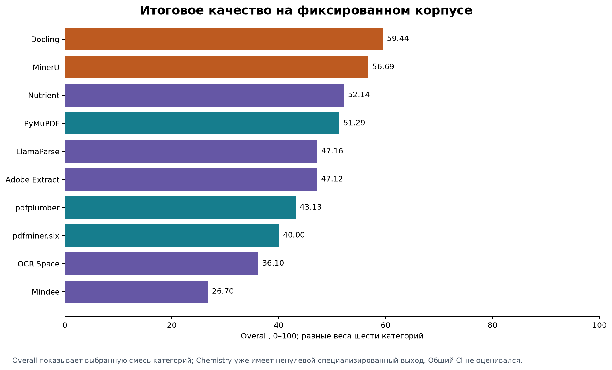
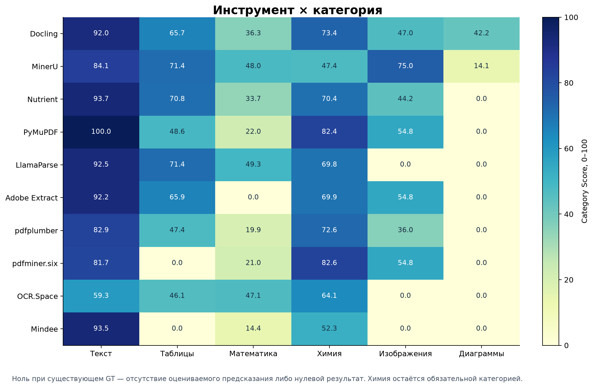
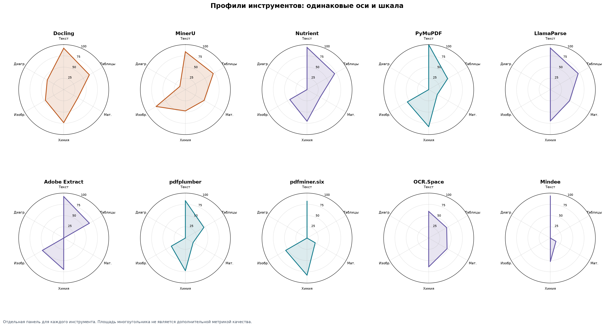
Наибольший наблюдённый Overall у Docling — 59,44, затем MinerU — 56,69 и Nutrient — 52,14. Однако лидеры категорий различаются: PyMuPDF по тексту, MinerU по таблицам и изображениям, LlamaParse по математике, pdfminer.six по действующему Chemistry Score, Docling по диаграммам.
13. Сравнение качества
| Категория | Наибольшая оценка | Score | Среднее 10 tools | Score>0 | Matched |
|---|---|---|---|---|---|
| Текст | pymupdf | 99,98 | 87,18 | 10/10 | 89/90 |
| Таблицы | mineru | 71,44 | 48,73 | 8/10 | 49/70 |
| Математика | llamaparse | 49,33 | 29,17 | 9/10 | 54/60 |
| Химия | pdfminer | 82,59 | 68,49 | 10/10 | 60/60 |
| Изображения | mineru | 75,01 | 36,66 | 7/10 | 29/50 |
| Диаграммы | docling | 42,19 | 5,63 | 2/10 | 10/70 |
Текст оказался наиболее устойчивой категорией: среднее десяти инструментов 87,18. Таблицы имеют среднее 48,73 и особенно зависят от сохранения grid/merged cells. Математика имеет среднее 29,17; ненулевой результат получен у 9/10 инструментов, но структурный LaTeX остаётся сложным. Изображения имеют среднее 36,66. Наиболее трудны диаграммы: среднее 5,63, ненулевые результаты только у Docling и MinerU.
Все инструменты обнаружили 6/6 химических GT-объектов по единому строгому GT-независимому правилу, поэтому Chemistry Detection=100 у всех. Conditional Structured Extraction различается от 39,04 до 75,13 и лучше отражает качество формул, bbox, labels и структурного представления. Chemistry Score и Overall при этом не заменялись диагностическими показателями.
| Инструмент | Chemistry | Detection | Extraction | detected | Объекты |
|---|---|---|---|---|
| PyMuPDF | 82,43 | 100,00 | 74,90 | 6/6 |
| pdfplumber | 72,59 | 100,00 | 60,84 | 6/6 |
| Docling | 73,45 | 100,00 | 62,07 | 6/6 |
| pdfminer.six | 82,59 | 100,00 | 75,13 | 6/6 |
| MinerU | 47,40 | 100,00 | 39,04 | 6/6 |
| OCR.Space | 64,06 | 100,00 | 61,69 | 6/6 |
| Nutrient | 70,38 | 100,00 | 57,69 | 6/6 |
| Mindee | 52,33 | 100,00 | 44,00 | 6/6 |
| Adobe Extract | 69,90 | 100,00 | 57,01 | 6/6 |
| LlamaParse | 69,80 | 100,00 | 56,86 | 6/6 |
| Группа | Текст | Таблицы | Математика | Химия | Изображения | Диаграммы | Overall |
|---|---|---|---|---|---|---|---|
| Локальные | 88,13 | 46,64 | 29,42 | 71,69 | 53,52 | 11,27 | 50,11 |
| Облачные | 86,23 | 50,83 | 28,91 | 65,30 | 19,80 | 0,00 | 41,85 |
| Classic local | 88,18 | 32,01 | 20,93 | 79,20 | 48,52 | 0,00 | 44,81 |
| ML local | 88,06 | 68,58 | 42,15 | 60,42 | 61,02 | 28,17 | 58,07 |
Средний Overall локальной группы равен 50,11, облачной — 41,85. Внутри локальной группы ML-системы имеют 58,07 против 44,81 у classic parsers. Средний Text почти одинаков, а различие связано главным образом с таблицами, математикой, изображениями и диаграммами. Это сравнение выбранных участников, а не всех решений соответствующего класса.
| Среднее Text/Table/Diagram | Text | Table | Diagram | |
|---|---|---|---|---|
| D01 | 52,62 | 93,91 | 59,05 | 4,92 |
| D02 | 52,74 | 90,34 | 61,75 | 6,12 |
| D03 | 56,89 | 94,92 | 69,41 | 6,35 |
| D04 | 39,49 | 85,66 | 25,50 | 7,29 |
| D05 | 34,18 | 71,08 | 27,96 | 3,50 |
На общем наборе Text/Table/Diagram наиболее трудным оказался D05 — 34,18, наиболее лёгким D03 — 56,89. Зависимость от документа велика: например, Text pdfminer.six равен 100 на D02/D03, но 15,78 на D05. Поэтому один PDF не может представлять всё множество технических документов.
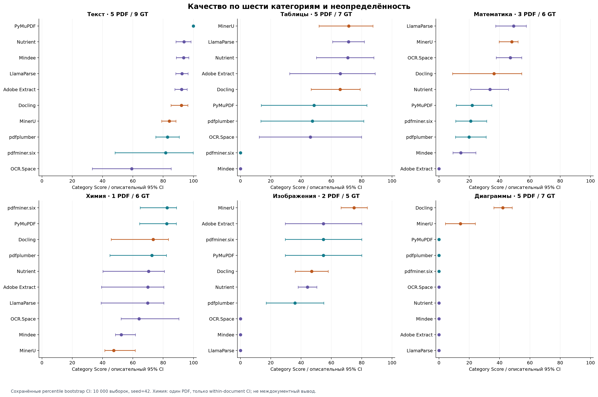
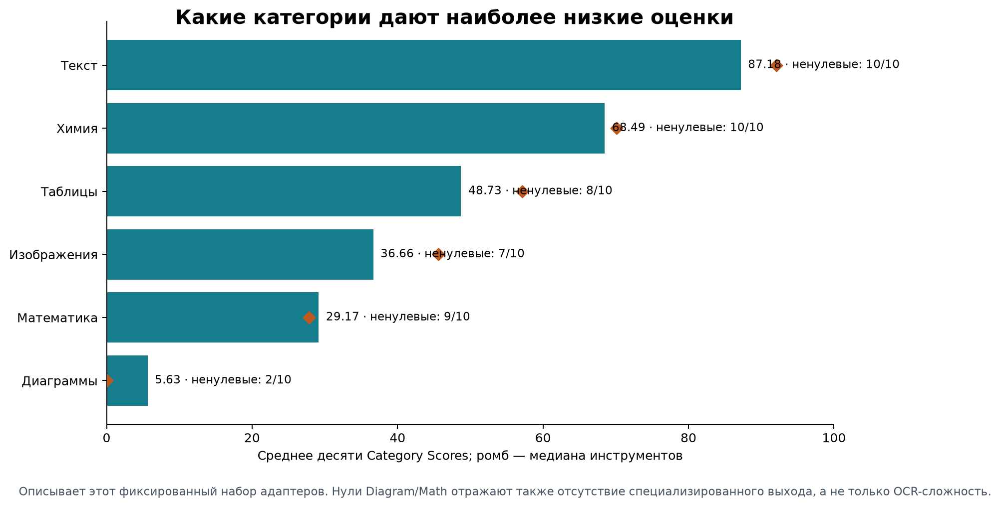
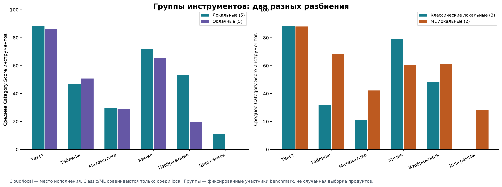
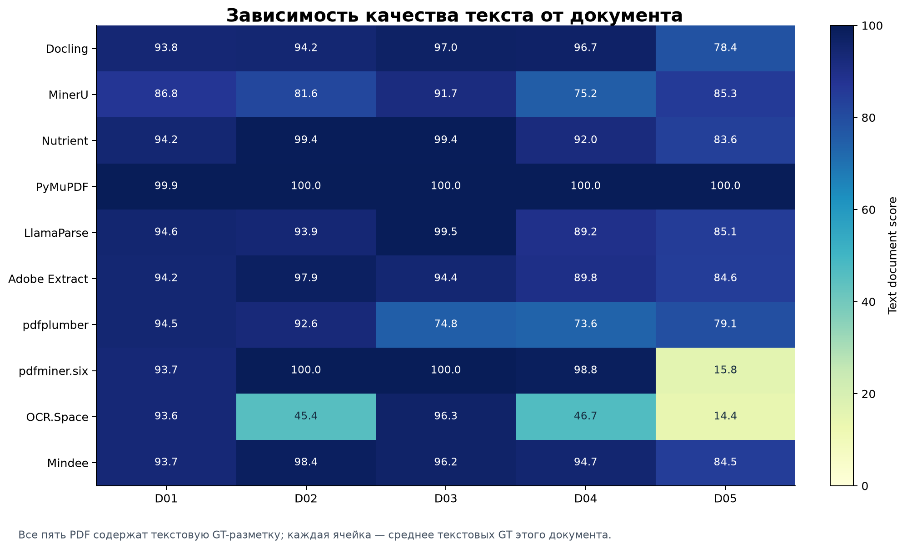
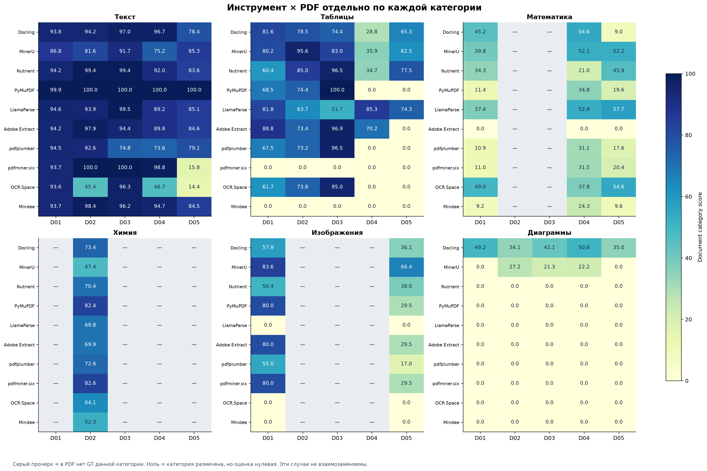
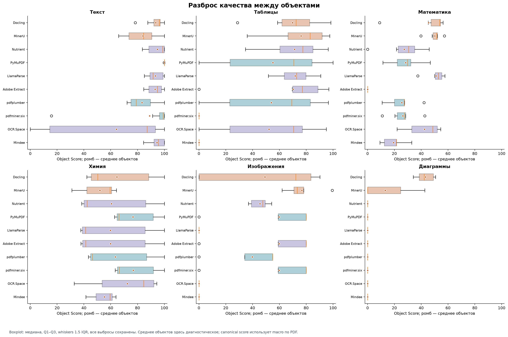
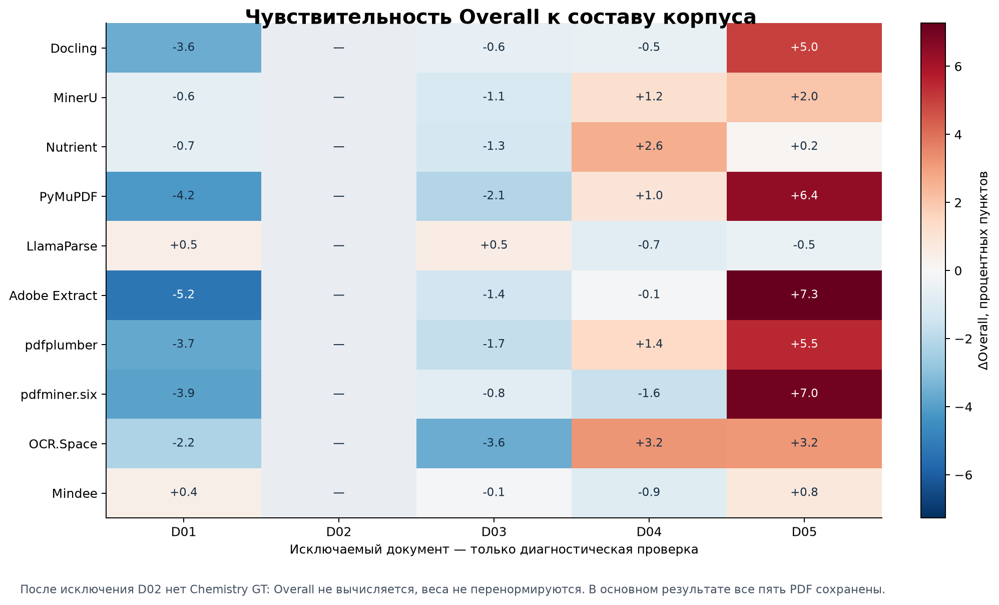
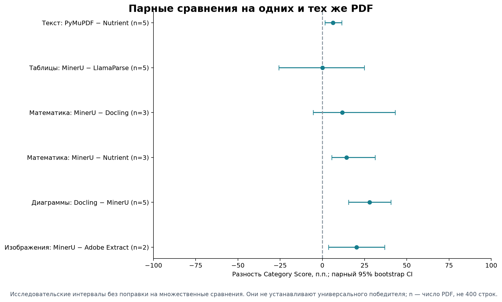
14. Сравнение производительности
| Инструмент | с/стр. | Всего, с | Peak RAM, GiB | Peak VRAM, GiB | Overall |
|---|---|---|---|---|---|
| pdfplumber | 0,086 | 8,5 | 0,81 | 0,00 | 43,13 |
| PyMuPDF | 0,357 | 35,0 | 0,55 | 0,00 | 51,29 |
| Adobe Extract | 1,415 | 138,7 | 0,09 | 0,00 | 47,12 |
| Mindee | 1,435 | 140,7 | 0,14 | 0,00 | 26,70 |
| MinerU | 2,705 | 265,1 | 5,66 | 4,66 | 56,69 |
| pdfminer.six | 2,760 | 270,5 | 0,77 | 0,00 | 40,00 |
| LlamaParse | 2,785 | 273,0 | 0,08 | 0,00 | 47,16 |
| Nutrient | 4,245 | 416,0 | 0,09 | 0,00 | 52,14 |
| OCR.Space | 6,182 | 605,8 | 0,09 | 0,00 | 36,10 |
| Docling | 72,436 | 7098,8 | 10,62 | 7,99 | 59,44 |
Самый быстрый наблюдённый результат у pdfplumber — 0,086 с/стр., затем PyMuPDF — 0,357 с/стр. Docling требует 72,44 с/стр., около 10,62 GiB RAM и 7,99 GiB VRAM; MinerU — 2,70 с/стр., 5,66 GiB RAM и 4,66 GiB VRAM. Для облачных сервисов измерены клиентские ресурсы; серверные RAM/VRAM неизвестны и не интерпретируются как ноль поставщика.
Опубликованный peak_vram_mb использует process GPU peak, если он доступен; иначе device-wide usage учитывается только при подтверждённой CUDA-активности адаптера. torch_peak_reserved не выдаётся за физическое потребление VRAM.
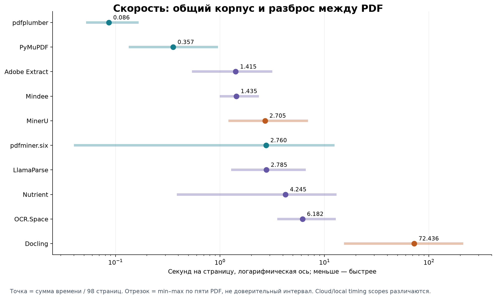
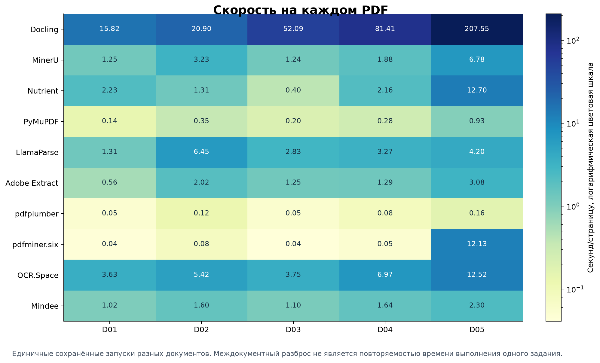
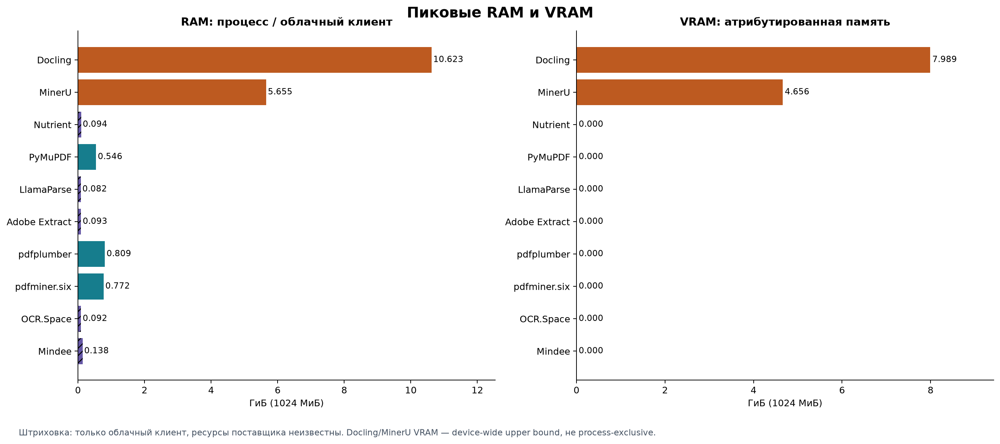
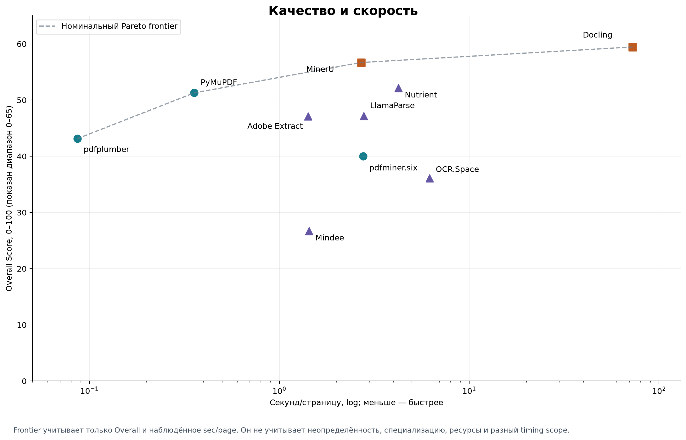
15. Сравнение стоимости
| Инструмент | Зафиксировано, USD | Основание | Overall |
|---|---|---|---|
| PyMuPDF | 0,00 | not_applicable_local | 51,29 |
| pdfplumber | 0,00 | not_applicable_local | 43,13 |
| Docling | 0,00 | not_applicable_local | 59,44 |
| pdfminer.six | 0,00 | not_applicable_local | 40,00 |
| MinerU | 0,00 | not_applicable_local | 56,69 |
| OCR.Space | 0,00 | actual | 36,10 |
| Nutrient | 0,00 | estimated | 52,14 |
| Mindee | 0,00 | estimated | 26,70 |
| Adobe Extract | 0,00 | estimated | 47,12 |
| LlamaParse | 0,00 | estimated | 47,16 |
Во всех строках сохранено 0,00 USD. Для локальных библиотек это not_applicable_local; для облачных сервисов — actual, estimated либо free/trial условия конкретного запуска. Эти значения не являются актуальным коммерческим прайс-листом и не позволяют ранжировать cost/quality. Корректное коммерческое сравнение потребует единого тарифа, объёма страниц, региона, налогов и даты фиксации цен.
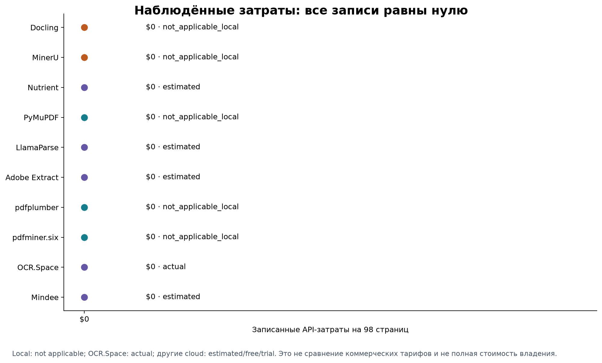
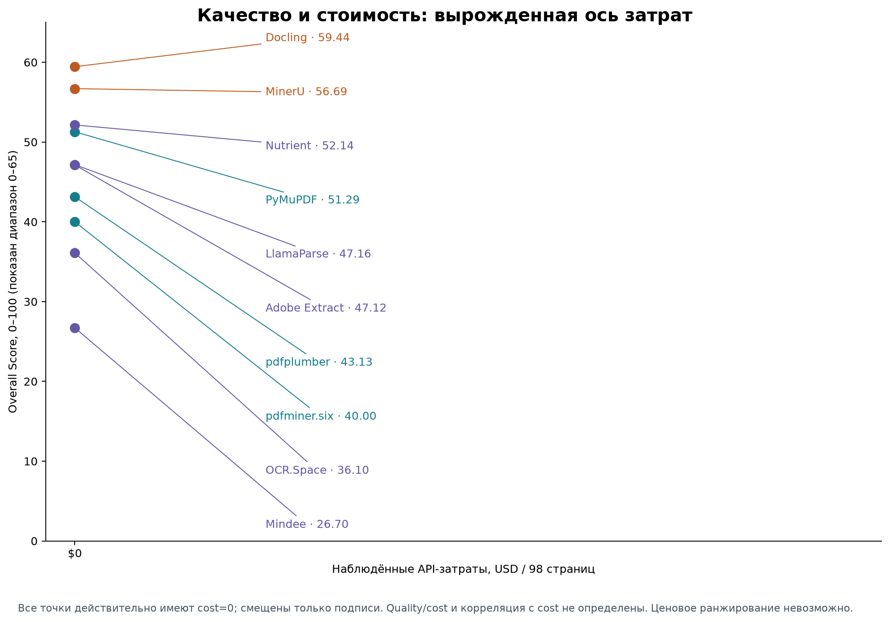
16. Error analysis
| Инструмент | Характерные ошибки на выбранных объектах |
|---|---|
| PyMuPDF | Текст почти точный; сложные таблицы остаются набором текстовых блоков; формулы теряют дроби и индексы; схемы типизируются как обычные изображения. |
| pdfplumber | В сложной вёрстке нарушаются порядок и разбиение слов; таблицы не всегда собираются из слов; математика становится плоским текстом; диаграммы не типизируются. |
| Docling | На D05 заметны ошибки порядка/OCR; сложные таблицы теряют строки и объединения; MATH_006 повреждает дроби, индексы, греческие символы и операторы; у схем теряются подписи и связи. |
| pdfminer.six | D05 вызывает сильную потерю текста и порядка; таблицы остаются словами; формулы плоские и неполные; изображения извлекаются непоследовательно, диаграммы остаются generic image. |
| MinerU | Ошибки текста связаны с порядком и OCR; таблицы теряют строки/merges; в формулах встречаются токенные ошибки; страдают индексы химии, crop и caption изображений. |
| OCR.Space | Часть текстовых регионов не сопоставляется; таблицы не структурируются; OCR формул теряет дроби, индексы, греческие символы и операторы; визуальный payload отсутствует. |
| Nutrient | На D05 нарушаются порядок и переносы; таблицы теряют строки/объединения; отдельный математический объект сопоставлен пространственно, но payload пуст; схемы часто остаются изображениями. |
| Mindee | Слова D05 дробятся; таблицы представлены словами; математика плоская; химические индексы повреждаются; изображения и диаграммы представлены преимущественно текстом OCR. |
| Adobe Extract | Сегментация слов ухудшается на D05; отдельные таблицы теряют структуру; математические объекты возвращаются как Figure без LaTeX; диаграммы остаются figures. |
| LlamaParse | На D05 встречаются ошибки порядка и переносов; таблицы теряют строки и содержимое; математический payload не всегда точен; Mermaid-граф может остаться TextBlock, а изображения — описанием без visual asset. |
Ошибки разделены на отсутствие объекта и низкое качество уже найденного объекта. Дополнительно проверялся nearby output другого типа: таблица могла присутствовать как TextBlock, формула Adobe — как Figure, диаграмма — как generic Image или Mermaid-текст. Такое содержимое не считается полноценным структурированным извлечением требуемой категории, но учитывается при объяснении причины.
Полный error analysis из 60 случаев · Все 60 примеров JSON
17. По 5 примеров для каждого из 10 инструментов
Для каждого инструмента взяты пять наименьших Object Score среди шести стратифицированных категориальных случаев Промпта 14; при равенстве использован фиксированный порядок категорий и object ID. Это диагностическая выборка, а не новая средняя оценка. Шестой случай каждого инструмента доступен в полном error analysis.
PyMuPDF
Пример 1: Tables — TAB_006 (D04, стр. 8), 0,00/100
Исходный объект
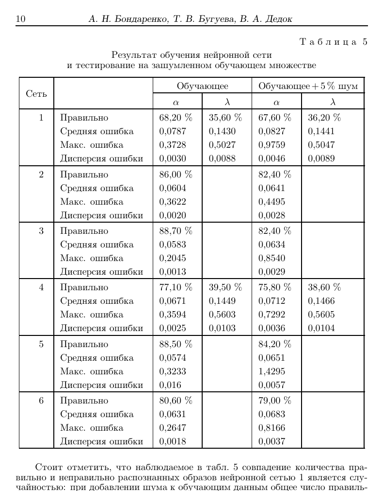
Тип ошибки: таблица превращена в обычный текст; структура строк/колонок отсутствует
Причина: Typed Table отсутствует, но внутри GT-области найдено TextBlock: 8. Текст извлечён без сетки ячеек, поэтому cell recall и структурные компоненты обнуляются.
Влияние: Object Score=0.00/100; потеря относительно идеального объекта=100.00 п.п.; cell_recall=0.00, cell_content=24.24, row_structure=0.00, column_structure=0.00, merged_f1=0.00, teds_like=0.45
Ground Truth
Размер: 25 × 6; ячеек: 132 [H] Сеть | [H] Показатель | [H] Обучающее α | [H] Обучающее λ | [H] Обучающее + 5% шум α | [H] Обучающее + 5% шум λ 1 | Правильно | 68,20 % | 35,60 % | 67,60 % | 36,20 % | Средняя ошибка | 0,0787 | 0,1430 | 0,0827 | 0,1441 | Макс. ошибка | 0,3728 | 0,5027 | 0,9759 | 0,5047 | Дисперсия ошибки | 0,0030 | 0,0088 | 0,0046 | 0,0089 2 | Правильно | 86,00 % | | 82,40 % | | Средняя ошибка | 0,0604 | | 0,0641 | | Макс. ошибка | 0,3622 | | 0,4495 | | Дисперсия ошибки | 0,0020 | | 0,0028 | 3 | Правильно | 88,70 % | | 82,40 % | | Средняя ошибка | 0,0583 | | 0,0634 | | Макс. ошибка | 0,2045 | | 0,8540 | | Дисперсия ошибки | 0,0013 | | 0,0029 | 4 | Правильно | 77,10 % | 39,50 % | 75,80 % | 38,60 % | Средняя ошибка | 0,0671 | 0,1449 | 0,0712 | 0,1466 | Макс. ошибка | 0,3594 | 0,5603 | 0,7292 | 0,5605 | Дисперсия ошибки | 0,0025 | 0,0103 | 0,0036 | 0,0104 5 | Правильно | 88,50 % | | 84,20 % | | Средняя ошибка | 0,0574 | | 0,0651 | | Макс. ошибка | 0,3233 | | 1,4295 | | Дисперсия ошибки | 0,016 | | 0,0057 | 6 | Правильно | 80,60 % | | 79,00 % | | Средняя ошибка | 0,0631 | | 0,0683 | | Макс. ошибка | 0,2647 | | 0,8166 | | Дисперсия ошибки | 0,0018 | | 0,0037 |
Output инструмента
Типизированный объект отсутствует. Содержимое в той же области, но другого/несопоставленного типа: - TextBlock overlap=0.02: и тестирование на зашумленном обучающем множестве - TextBlock overlap=0.01: Результат обучения нейронной сети - TextBlock overlap=0.01: Обучающее + 5 % шум - TextBlock overlap=0.01: Дисперсия ошибки - TextBlock overlap=0.01: Дисперсия ошибки - TextBlock overlap=0.01: Дисперсия ошибки - TextBlock overlap=0.01: Дисперсия ошибки - TextBlock overlap=0.01: Дисперсия ошибки
Пример 2: Images — IMG_004 (D05, стр. 2), 0,00/100
Исходный объект
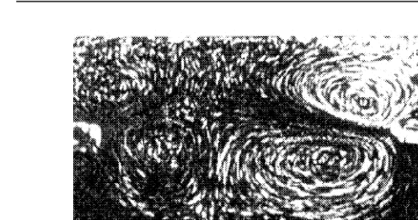
Тип ошибки: visual candidate не сопоставлен с Image GT
Причина: В области есть visual candidate, но он не выбран при one-to-one сопоставлении по типу/геометрии либо не имеет подтверждённого extraction payload.
Влияние: Object Score=0.00/100; потеря относительно идеального объекта=100.00 п.п.; detection_recall=0.00, iou=0.00, extraction=0.00, caption=0.00

Ground Truth
caption: Рис. 1. Картины течения в системе двух параллельных проводников; asset: ground_truth/assets/IMG_004.png
Output инструмента
Типизированный объект отсутствует. Содержимое в той же области, но другого/несопоставленного типа: - Image overlap=1.00: caption: нет; asset: assets\p2_image_16.png
Пример 3: Diagrams — DIA_001 (D01, стр. 9), 0,00/100
Исходный объект
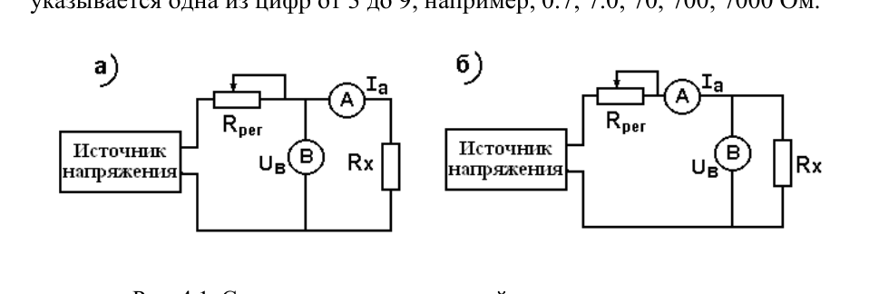
Тип ошибки: диаграмма сохранена как обычное изображение; потеря текста и связей
Причина: В GT-области найдено Image: 1, но Diagram отсутствует. Generic image не содержит типизированных text_elements/key_elements.
Влияние: Object Score=0.00/100; потеря относительно идеального объекта=100.00 п.п.; detection_recall=0.00, iou=0.00, diagram_text_recall=0.00, caption=0.00, element_recall=0.00, key_elements=0.00

Ground Truth
тип: electrical_scheme caption: Рис. 4.1. Схемы электрических цепей для реализации метода амперметра и вольтметра текст: Источник напряжения, Rрег, A, V, Rx ключевые элементы/связи: амперметр, вольтметр, измеряемое сопротивление asset: ground_truth/assets/DIA_001.png
Output инструмента
Типизированный объект отсутствует. Содержимое в той же области, но другого/несопоставленного типа: - Image overlap=1.00: caption: нет; asset: assets\p9_image_9.png
Пример 4: Math — MATH_001 (D01, стр. 17), 11,40/100
Исходный объект
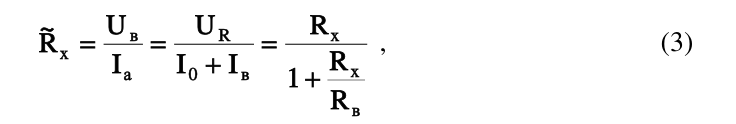
Тип ошибки: потеря fraction structure; ошибки subscript; потеря brackets
Причина: Exact match отсутствует; token precision=61.90, token recall=15.12, edit similarity=8.40.
Влияние: Object Score=11.40/100; потеря относительно идеального объекта=88.60 п.п.; raw_exact_match=0.00, normalized_exact_match=0.00, token_precision=61.90, token_recall=15.12, token_f1=24.30, edit_similarity=8.40
Ground Truth
\tilde{R}_{x}=\frac{U_{\mathrm{в}}}{I_{\mathrm{а}}}=\frac{U_R}{I_0+I_{\mathrm{в}}}=\frac{R_x}{1+\frac{R_x}{R_{\mathrm{в}}}}Output инструмента
a 0 U U R ~R в R x = = = , x R + I I I x 0 а в + 1 R в
Пример 5: Chemistry — CHEM_003 (D02, стр. 2), 62,91/100
Исходный объект
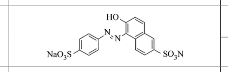
Тип ошибки: потеря химических символов/меток; неточный crop
Причина: Structure detection есть, но IoU=51.62, label recall=0.00, extraction=100.00.
Влияние: Object Score=62.91/100; потеря относительно идеального объекта=37.09 п.п.; detection=100.00, iou=51.62, label_recall=0.00, extraction=100.00, structured_extraction=47.01

Ground Truth
Желтый «солнечный закат» (Sunset Yellow FCF); текстовые метки: HO, N=N, NaO3S, SO3Na; asset: ground_truth/assets/CHEM_003.png
Output инструмента
structure; текстовые метки: нет; asset: assets\p2_image_15.jpeg
pdfplumber
Пример 1: Tables — TAB_006 (D04, стр. 8), 0,00/100
Исходный объект
Тип ошибки: таблица превращена в обычный текст; структура строк/колонок отсутствует
Причина: Typed Table отсутствует, но внутри GT-области найдено TextBlock: 8. Текст извлечён без сетки ячеек, поэтому cell recall и структурные компоненты обнуляются.
Влияние: Object Score=0.00/100; потеря относительно идеального объекта=100.00 п.п.; cell_recall=0.00, cell_content=24.24, row_structure=0.00, column_structure=0.00, merged_f1=0.00, teds_like=0.45
Ground Truth
Размер: 25 × 6; ячеек: 132 [H] Сеть | [H] Показатель | [H] Обучающее α | [H] Обучающее λ | [H] Обучающее + 5% шум α | [H] Обучающее + 5% шум λ 1 | Правильно | 68,20 % | 35,60 % | 67,60 % | 36,20 % | Средняя ошибка | 0,0787 | 0,1430 | 0,0827 | 0,1441 | Макс. ошибка | 0,3728 | 0,5027 | 0,9759 | 0,5047 | Дисперсия ошибки | 0,0030 | 0,0088 | 0,0046 | 0,0089 2 | Правильно | 86,00 % | | 82,40 % | | Средняя ошибка | 0,0604 | | 0,0641 | | Макс. ошибка | 0,3622 | | 0,4495 | | Дисперсия ошибки | 0,0020 | | 0,0028 | 3 | Правильно | 88,70 % | | 82,40 % | | Средняя ошибка | 0,0583 | | 0,0634 | | Макс. ошибка | 0,2045 | | 0,8540 | | Дисперсия ошибки | 0,0013 | | 0,0029 | 4 | Правильно | 77,10 % | 39,50 % | 75,80 % | 38,60 % | Средняя ошибка | 0,0671 | 0,1449 | 0,0712 | 0,1466 | Макс. ошибка | 0,3594 | 0,5603 | 0,7292 | 0,5605 | Дисперсия ошибки | 0,0025 | 0,0103 | 0,0036 | 0,0104 5 | Правильно | 88,50 % | | 84,20 % | | Средняя ошибка | 0,0574 | | 0,0651 | | Макс. ошибка | 0,3233 | | 1,4295 | | Дисперсия ошибки | 0,016 | | 0,0057 | 6 | Правильно | 80,60 % | | 79,00 % | | Средняя ошибка | 0,0631 | | 0,0683 | | Макс. ошибка | 0,2647 | | 0,8166 | | Дисперсия ошибки | 0,0018 | | 0,0037 |
Output инструмента
Типизированный объект отсутствует. Содержимое в той же области, но другого/несопоставленного типа: - TextBlock overlap=0.01: Обучающее+5% - TextBlock overlap=0.00: зашумленном - TextBlock overlap=0.00: тестирование - TextBlock overlap=0.00: Обучающее - TextBlock overlap=0.00: обучающем - TextBlock overlap=0.00: Правильно - TextBlock overlap=0.00: Правильно - TextBlock overlap=0.00: Правильно
Пример 2: Images — IMG_004 (D05, стр. 2), 0,00/100
Исходный объект
Тип ошибки: visual candidate не сопоставлен с Image GT
Причина: В области есть visual candidate, но он не выбран при one-to-one сопоставлении по типу/геометрии либо не имеет подтверждённого extraction payload.
Влияние: Object Score=0.00/100; потеря относительно идеального объекта=100.00 п.п.; detection_recall=0.00, iou=0.00, extraction=0.00, caption=0.00
Ground Truth
caption: Рис. 1. Картины течения в системе двух параллельных проводников; asset: ground_truth/assets/IMG_004.png
Output инструмента
Типизированный объект отсутствует. Содержимое в той же области, но другого/несопоставленного типа: - Image overlap=1.00: caption: нет; asset: нет
Пример 3: Diagrams — DIA_001 (D01, стр. 9), 0,00/100
Исходный объект
Тип ошибки: диаграмма сохранена как обычное изображение; потеря текста и связей
Причина: В GT-области найдено Image: 1, но Diagram отсутствует. Generic image не содержит типизированных text_elements/key_elements.
Влияние: Object Score=0.00/100; потеря относительно идеального объекта=100.00 п.п.; detection_recall=0.00, iou=0.00, diagram_text_recall=0.00, caption=0.00, element_recall=0.00, key_elements=0.00
Ground Truth
тип: electrical_scheme caption: Рис. 4.1. Схемы электрических цепей для реализации метода амперметра и вольтметра текст: Источник напряжения, Rрег, A, V, Rx ключевые элементы/связи: амперметр, вольтметр, измеряемое сопротивление asset: ground_truth/assets/DIA_001.png
Output инструмента
Типизированный объект отсутствует. Содержимое в той же области, но другого/несопоставленного типа: - Image overlap=1.00: caption: нет; asset: нет
Пример 4: Math — MATH_001 (D01, стр. 17), 10,89/100
Исходный объект
Тип ошибки: потеря fraction structure; ошибки subscript; потеря brackets
Причина: Exact match отсутствует; token precision=60.00, token recall=13.95, edit similarity=9.16.
Влияние: Object Score=10.89/100; потеря относительно идеального объекта=89.11 п.п.; raw_exact_match=0.00, normalized_exact_match=0.00, token_precision=60.00, token_recall=13.95, token_f1=22.64, edit_similarity=9.16
Ground Truth
\tilde{R}_{x}=\frac{U_{\mathrm{в}}}{I_{\mathrm{а}}}=\frac{U_R}{I_0+I_{\mathrm{в}}}=\frac{R_x}{1+\frac{R_x}{R_{\mathrm{в}}}}Output инструмента
a 0 U U R ~ в R x = = = , R x R + I I I x 0 а в 1+ R в
Пример 5: Chemistry — CHEM_003 (D02, стр. 2), 43,30/100
Исходный объект
Тип ошибки: потеря химических символов/меток; structural formula не извлечена; неточный crop
Причина: Structure detection есть, но IoU=53.20, label recall=0.00, extraction=0.00.
Влияние: Object Score=43.30/100; потеря относительно идеального объекта=56.70 п.п.; detection=100.00, iou=53.20, label_recall=0.00, extraction=0.00, structured_extraction=19.00
Ground Truth
Желтый «солнечный закат» (Sunset Yellow FCF); текстовые метки: HO, N=N, NaO3S, SO3Na; asset: ground_truth/assets/CHEM_003.png
Output инструмента
structure; текстовые метки: нет; asset: нет
Docling
Пример 1: Images — IMG_003 (D01, стр. 27), 0,00/100
Исходный объект
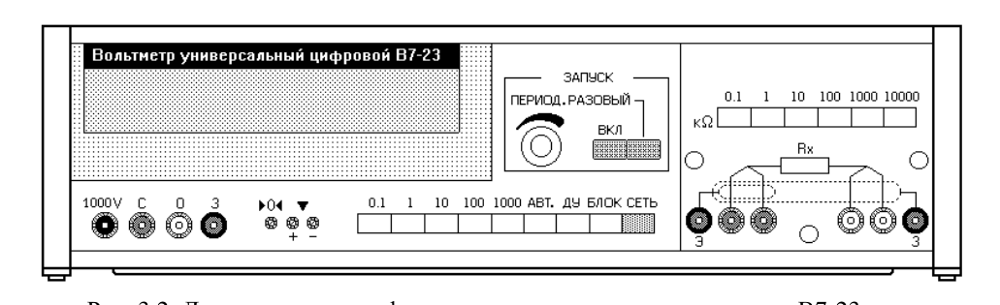
Тип ошибки: visual candidate не сопоставлен с Image GT
Причина: В области есть visual candidate, но он не выбран при one-to-one сопоставлении по типу/геометрии либо не имеет подтверждённого extraction payload.
Влияние: Object Score=0.00/100; потеря относительно идеального объекта=100.00 п.п.; detection_recall=0.00, iou=0.00, extraction=0.00, caption=0.00

Ground Truth
caption: Рис. 3.2. Лицевая панель цифрового интегрирующего вольтметра В7-23; asset: ground_truth/assets/IMG_003.png
Output инструмента
Типизированный объект отсутствует. Содержимое в той же области, но другого/несопоставленного типа: - Diagram overlap=0.97: тип: scientific_scheme caption: Рис. 3.2. Лицевая панель цифрового интегрирующего вольтметра В7-23 текст: Вольтнетр универсальный цифровой В7-23, ЗАПЧЕК, D.l, 1D, IDD, BКЛ, нт, 1D, IUUD дBT, ДЧ БЛОК СЕТЬ ключевые элементы/связи: нет asset: assets\picture_0007.png
Пример 2: Math — MATH_006 (D05, стр. 19), 8,99/100
Исходный объект
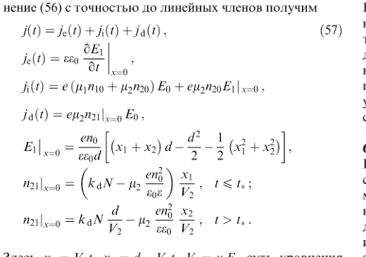
Тип ошибки: потеря fraction structure; ошибки superscript; потеря Greek symbols; потеря operators
Причина: Exact match отсутствует; token precision=12.05, token recall=34.54, edit similarity=9.22.
Влияние: Object Score=8.99/100; потеря относительно идеального объекта=91.01 п.п.; raw_exact_match=0.00, normalized_exact_match=0.00, token_precision=12.05, token_recall=34.54, token_f1=17.87, edit_similarity=9.22
Ground Truth
j(t)=j_e(t)+j_i(t)+j_d(t),\quad j_e(t)=\varepsilon\varepsilon_0\left.\frac{\partial E_1}{\partial t}\right|_{x=0},\quad j_i(t)=e(\mu_1n_{10}+\mu_2n_{20})E_0+\left.e\mu_2n_{20}E_1\right|_{x=0},\quad j_d(t)=\left.e\mu_2n_{21}\right|_{x=0}E_0,\quad \left.E_1\right|_{x=0}=\frac{en_0}{\varepsilon\varepsilon_0d}\left[(x_1+x_2)d-\frac{d^2}{2}-\frac{1}{2}(x_1^2+x_2^2)\right],\quad \left.n_{21}\right|_{x=0}=\left(k_dN-\mu_2\frac{en_0^2}{\varepsilon_0\varepsilon}\right)\frac{x_1}{V_2},\quad t\le t_*;\quad \left.n_{21}\right|_{x=0}=k_dN\frac{d}{V_2}-\mu_2\frac{en_0^2}{\varepsilon\varepsilon_0}\frac{x_2}{V_2},\quad t>t_*Output инструмента
\Pi o c j e \colon & \rho j e _ { N } h a ( 5 5 ) \ n \ \Pi o c j e A \bar { h } \ \bar { b } e p x , \\ \hom e \left ( 5 \right ) c \ & \top \Pi o c \bar { b } \ \Pi o \ J \bar { h } \ \Pi o \bar { h } \ \Pi o \bar { h } \ \Pi o \ J \bar { h } \ \Pi o \ J \bar { h } \ \Pi o \ J \bar { h } \ \Pi o \ J \bar { h } \ \Pi o \ J \bar { h } \ \Pi o \ J \bar { h } \ \Pi o \ J \bar { h } \ \Pi o \ J \bar { h } \ \Pi o \ J \bar { h } \ \Pi o \ J \bar { h } \ \Pi o \ J \bar { h } \ \Pi o \ J \bar { h } \ \Pi o \ J \bar { h } \ \Pi o \ J \bar { h } \ \Pi o \ J \bar { h } \ \Pi o \ J \bar { h } \ \Pi o \ J \bar { h } \ \Pi o \ J \bar { h } \ \Pi o \ J \bar { h } \ \Pi o \ J \bar { h } \ \Pi o \ J \bar { h } \ \Pi o \ J \bar { h } \ \Pi o \ J \bar { h } \ \Pi o \ J \bar { h } \ \Pi o \ J \bar { h } \ \Pi o \ J \bar { h } \ \Pi o \ J \bar { h } \ \Pi o \ J \bar { h } \ \Pi o \ J \bar { h } \ \Pi o \ J \bar { h } \ \Pi o \ J \bar { h } \ \Pi o \ J \bar { h } \ \Pi o \ J \bar { h } \ \Pi o \ J \bar { h } \ \Pi o \ J \bar { h } \ \Pi o \ J \bar { h } \ \Pi o \ J \bar { h } \ \Pi o \ J \bar { h } \ \Pi o \ J \bar { h } \ \Pi o \ J \bar { h } \ \Pi o \ J \bar { h } \ \Pi o \ J \bar { h } \ \Pi o \ J \bar { h } \ \Pi o \ J \bar { h } \ \Pi o \ J \bar { h } \ \Pi o \ J \bar { h } \ \Pi o \ J \bar { h } \ \Pi o \ J \bar { h } \ \Pi o \ J \bar { h } \ \Pi o \ J \bar { h } \ \Pi o \ J \bar { h } \ \Pi o \ J \bar { h } \ \Pi o \ J \bar { h } \ \Pi o \ J \bar { h } \ \Pi o \ J \bar { h } \ \Pi o \ J \bar { h } \ \Pi o \ J \bar { h } \ \Pi o \ J \bar { h } \ \Pi o \ J \bar { h } \ \Pi o \ J \bar { h } \ \Pi o \ J \bar { h } \ \Pi o \ J \bar { h } \ \Pi o \ J \bar { h } \ \Pi o \ J \bar { h } \ \Pi o \ J \bar { h } \ \Pi o \ J \bar { h } \ \Pi o \ J \bar { h } \ \Pi o \ J \bar { h } \ \Pi o \ J \bar { h } \ \Pi o \ J \bar { h } \ \Pi o \ J \bar { h } \ \Pi o \ J \bar { h } \ \Pi o \ J \bar { h } \ \Pi o \ J \bar { h } \ \Pi o \ J \bar { h } \ \Pi o \ J \bar { h } \ \Pi o \ J \bar { h } \ \Pi o \ J \bar { h } \ \Pi o \ J \bar { h } \ \Pi o \ J \bar { h } \ \Pi o \ J \bar { h } \ \Pi o \ J \bar { h } \ \Pi o \ J \bar { h } \ \Pi o \ J \bar { h } \ \Pi o \ J \bar { h } \ \Pi o \ J \bar { h } \ \Pi o \ J \bar { h } \ \Pi o \ J \bar { h } \ \Pi o \ J \bar { h } \ \Pi o \ J \bar { h } \ \Pi o \ J \bar { h } \ \Pi o \ J \bar { h } \ \Pi o \ J \bar { h } \ \Pi o \ J \bar { h } \ \Pi o \ J \bar { h } \ \Pi o \ J \bar { h } \ \Pi o \ J \bar { h } \ \Pi o \ J \bar { h } \ \Pi o \ J \bar { h } \ \Pi o \ J \bar { h } \ \Pi o \ J \bar { h } \ \Pi o \ J \bar { h } \ \Pi o \ J \bar { h } \ \Pi o \ J \bar { h } \ \Pi o \ J \bar { h } \ \Pi o \ J \bar { h } \ \Pi o \ J \bar { h } \ \Pi o \ J \bar { h } \ \Pi o \ J \bar { h } \ \Pi o \ J \bar { h } \ \Pi o \ J \bar { h } \ \Pi o \ J \bar { h } \ \Pi o \ J \bar { h } \ \Pi o \ J \bar { h } \ \Pi o \ J \bar { h } \ \Pi o \ J \bar { h } \ \Pi o \ J \bar { h } \ \Pi o \ J \bar { h } \ \Pi o \ J \bar { h } \ \Pi o \ J \bar { h } \ \Pi o \ J \bar { h } \ \Pi o \ J \bar { h } \ \Pi o \ J \bar { h } \ \Pi o \ J \bar { h } \ \Pi o \ J \bar { h } \ \Pi o \ J \bar { h } \ \Pi o \ J \bar { h } \ \Pi o \ J \bar { h } \ \Pi o \ J \bar { h } \ \Pi o \ J \bar { h } \ \Pi o \ J \bar { h } \ \Pi o \ J \bar { h } \ \Pi o \ J \bar { h } \ \Pi o \ J \bar { h } \ \Pi o \ J \bar { h } \ \Pi o \ J \bar { h } \ \Pi o \ J \bar { h } \ \Pi o \ J \bar { h } \ \Pi o \ J \bar { h } \ \Pi o \ J \bar { h } \ \Pi o \ J \bar { h } \ \Pi o \ J \bar { h } \ \Pi o \ J \bar { h } \ \Pi o \ J \bar { h } \ \Pi o \ J \bar { h } \ \Pi o \ J \bar { h } \ \Pi o \ J \bar { h } \ \Pi o \ J \bar { h } \ \Pi o \ J \bar { h } \ \Pi o \ J \bar { h } \ \Pi o \ J \bar { h } \ \Pi o \ J \bar { h } \ \Pi o \ J \bar { h } \ \Pi o \ J \bar { h } \ \Pi o \ J \bar { h } \ \Pi o \ J \bar { h } \ \Pi o \ J \bar { h } \ \Pi o \ J \bar { h } \ \Pi o \ J \bar { h } \ \Pi o \ J \bar { h } \ \Pi o \ J \bar { h } \ \Pi o \ J \bar { h } \ \Pi o \ J \bar { h } \ \Pi o \ J \bar { h } \ \Pi o \ J \bar { h } \ \Pi o \ J \bar { h } \ \Pi o \ J \bar { h } \ \Pi o \ J \bar { h } \ \Pi o \ J \bar { h } \ \Pi o \ J \bar { h } \ \Pi o \ J \bar { h } \ \Pi o \ J \bar { h } \ \Pi o \ J \bar { h } \ \Pi o \ J \bar { h } \ \Pi o \ J \bar { h } \ \Pi o \ JПример 3: Tables — TAB_006 (D04, стр. 8), 28,82/100
Исходный объект
Тип ошибки: потеря строк; ошибки объединения ячеек; искажение содержимого ячеек
Причина: GT=25×6, output=8×6; headers 6→7. Cell recall=19.70, TEDS-like=17.19.
Влияние: Object Score=28.82/100; потеря относительно идеального объекта=71.18 п.п.; cell_recall=19.70, cell_content=25.54, row_structure=32.00, column_structure=100.00, merged_f1=0.00, teds_like=17.19
Ground Truth
Размер: 25 × 6; ячеек: 132 [H] Сеть | [H] Показатель | [H] Обучающее α | [H] Обучающее λ | [H] Обучающее + 5% шум α | [H] Обучающее + 5% шум λ 1 | Правильно | 68,20 % | 35,60 % | 67,60 % | 36,20 % | Средняя ошибка | 0,0787 | 0,1430 | 0,0827 | 0,1441 | Макс. ошибка | 0,3728 | 0,5027 | 0,9759 | 0,5047 | Дисперсия ошибки | 0,0030 | 0,0088 | 0,0046 | 0,0089 2 | Правильно | 86,00 % | | 82,40 % | | Средняя ошибка | 0,0604 | | 0,0641 | | Макс. ошибка | 0,3622 | | 0,4495 | | Дисперсия ошибки | 0,0020 | | 0,0028 | 3 | Правильно | 88,70 % | | 82,40 % | | Средняя ошибка | 0,0583 | | 0,0634 | | Макс. ошибка | 0,2045 | | 0,8540 | | Дисперсия ошибки | 0,0013 | | 0,0029 | 4 | Правильно | 77,10 % | 39,50 % | 75,80 % | 38,60 % | Средняя ошибка | 0,0671 | 0,1449 | 0,0712 | 0,1466 | Макс. ошибка | 0,3594 | 0,5603 | 0,7292 | 0,5605 | Дисперсия ошибки | 0,0025 | 0,0103 | 0,0036 | 0,0104 5 | Правильно | 88,50 % | | 84,20 % | | Средняя ошибка | 0,0574 | | 0,0651 | | Макс. ошибка | 0,3233 | | 1,4295 | | Дисперсия ошибки | 0,016 | | 0,0057 | 6 | Правильно | 80,60 % | | 79,00 % | | Средняя ошибка | 0,0631 | | 0,0683 | | Макс. ошибка | 0,2647 | | 0,8166 | | Дисперсия ошибки | 0,0018 | | 0,0037 |
Output инструмента
Размер: 8 × 6; ячеек: 35 | | [H] Обучающее | | [H] Обучающее + 5 % шум | [H] Сеть | | [H] α | [H] λ | [H] α | [H] λ 1 | Правильно Средняя ошибка Макс. ошибка Дисперсия ошибки | 68,20 % 0,0787 0,3728 0,0030 | 35,60 % 0,1430 0,5027 0,0088 | 67,60 % 0,0827 0,9759 0,0046 | 36,20 % 0,1441 0,5047 0,0089 2 | Правильно Средняя ошибка Макс. ошибка Дисперсия ошибки | 86,00 % 0,0604 0,3622 0,0020 | | 82,40 % 0,0641 0,4495 0,0028 | 3 | Правильно Средняя ошибка Макс. ошибка Дисперсия ошибки | 88,70 % 0,0583 0,2045 0,0013 | | 82,40 % 0,0634 0,8540 0,0029 | 4 | Правильно Средняя ошибка Макс. ошибка Дисперсия ошибки | 77,10 % 0,0671 0,3594 0,0025 | 39,50 % 0,1449 0,5603 0,0103 | 75,80 % 0,0712 0,7292 0,0036 | 38,60 % 0,1466 0,5605 0,0104 5 | Правильно Средняя ошибка Макс. ошибка Дисперсия ошибки | 88,50 % 0,0574 0,3233 0,016 | | 84,20 % 0,0651 1,4295 0,0057 | 6 | Правильно Средняя ошибка Макс. ошибка Дисперсия ошибки | 80,60 % 0,0631 0,2647 0,0018 | | 79,00 % 0,0683 0,8166 0,0037 |
Пример 4: Diagrams — DIA_003 (D02, стр. 4), 34,06/100
Исходный объект
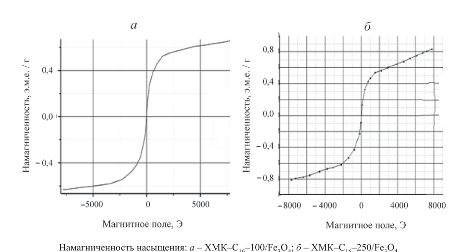
Тип ошибки: потеря текста; потеря связей/ключевых элементов; потеря caption
Причина: Detection=100.00, IoU=93.74, diagram text recall=0.00, key elements=0.00.
Влияние: Object Score=34.06/100; потеря относительно идеального объекта=65.94 п.п.; detection_recall=100.00, iou=93.74, diagram_text_recall=0.00, caption=0.00, element_recall=0.00, key_elements=0.00

Ground Truth
тип: chart caption: Намагниченность насыщения: а – ХМК–C16–100/Fe3O4; б – ХМК–C16–250/Fe3O4 текст: Намагниченность, Магнитное поле ключевые элементы/связи: кривая намагничивания, ось поля, ось намагниченности asset: ground_truth/assets/DIA_003.png
Output инструмента
тип: chart caption: нет текст: 04, 5, nn, 124, = ключевые элементы/связи: нет asset: assets\picture_0001.png
Пример 5: Chemistry — CHEM_004 (D02, стр. 2), 42,20/100
Исходный объект
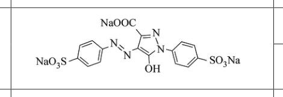
Тип ошибки: потеря химических символов/меток; structural formula не извлечена; неточный crop
Причина: Structure detection есть, но IoU=48.78, label recall=0.00, extraction=0.00.
Влияние: Object Score=42.20/100; потеря относительно идеального объекта=57.80 п.п.; detection=100.00, iou=48.78, label_recall=0.00, extraction=0.00, structured_extraction=17.42
Ground Truth
Тартразин (Tartrazine); текстовые метки: NaOOC, N=N, OH, NaO3S, SO3Na; asset: ground_truth/assets/CHEM_004.png
Output инструмента
structure; текстовые метки: нет; asset: нет
pdfminer.six
Пример 1: Tables — TAB_001 (D01, стр. 4), 0,00/100
Исходный объект
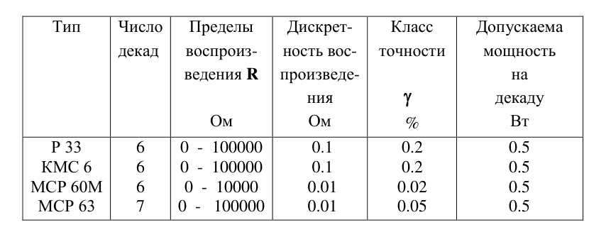
Тип ошибки: таблица превращена в обычный текст; структура строк/колонок отсутствует
Причина: Typed Table отсутствует, но внутри GT-области найдено TextBlock: 8. Текст извлечён без сетки ячеек, поэтому cell recall и структурные компоненты обнуляются.
Влияние: Object Score=0.00/100; потеря относительно идеального объекта=100.00 п.п.; cell_recall=0.00, cell_content=0.00, row_structure=0.00, column_structure=0.00, merged_f1=100.00, teds_like=1.96
Ground Truth
Размер: 5 × 6; ячеек: 30 [H] Тип | [H] Число декад | [H] Пределы воспроизведения R, Ом | [H] Дискретность воспроизведения, Ом | [H] Класс точности γ, % | [H] Допускаемая мощность на декаду, Вт Р 33 | 6 | 0–100000 | 0,1 | 0,2 | 0,5 КМС 6 | 6 | 0–100000 | 0,1 | 0,2 | 0,5 МСР 60М | 6 | 0–10000 | 0,01 | 0,02 | 0,5 МСР 63 | 7 | 0–100000 | 0,01 | 0,05 | 0,5
Output инструмента
Типизированный объект отсутствует. Содержимое в той же области, но другого/несопоставленного типа: - TextBlock overlap=0.01: Допускаема - TextBlock overlap=0.01: 0 - 100000 - TextBlock overlap=0.01: 0 - 100000 - TextBlock overlap=0.01: 0 - 100000 - TextBlock overlap=0.01: произведе- - TextBlock overlap=0.01: ведения R - TextBlock overlap=0.01: ность вос- - TextBlock overlap=0.01: 0 - 10000
Пример 2: Images — IMG_004 (D05, стр. 2), 0,00/100
Исходный объект
Тип ошибки: visual candidate не сопоставлен с Image GT
Причина: В области есть visual candidate, но он не выбран при one-to-one сопоставлении по типу/геометрии либо не имеет подтверждённого extraction payload.
Влияние: Object Score=0.00/100; потеря относительно идеального объекта=100.00 п.п.; detection_recall=0.00, iou=0.00, extraction=0.00, caption=0.00

Ground Truth
caption: Рис. 1. Картины течения в системе двух параллельных проводников; asset: ground_truth/assets/IMG_004.png
Output инструмента
Типизированный объект отсутствует. Содержимое в той же области, но другого/несопоставленного типа: - Image overlap=1.00: caption: нет; asset: assets\im2.bmp
Пример 3: Diagrams — DIA_001 (D01, стр. 9), 0,00/100
Исходный объект
Тип ошибки: диаграмма сохранена как обычное изображение; потеря текста и связей
Причина: В GT-области найдено Image: 1, но Diagram отсутствует. Generic image не содержит типизированных text_elements/key_elements.
Влияние: Object Score=0.00/100; потеря относительно идеального объекта=100.00 п.п.; detection_recall=0.00, iou=0.00, diagram_text_recall=0.00, caption=0.00, element_recall=0.00, key_elements=0.00

Ground Truth
тип: electrical_scheme caption: Рис. 4.1. Схемы электрических цепей для реализации метода амперметра и вольтметра текст: Источник напряжения, Rрег, A, V, Rx ключевые элементы/связи: амперметр, вольтметр, измеряемое сопротивление asset: ground_truth/assets/DIA_001.png
Output инструмента
Типизированный объект отсутствует. Содержимое в той же области, но другого/несопоставленного типа: - Image overlap=1.00: caption: нет; asset: assets\Im1.jpg
Пример 4: Math — MATH_001 (D01, стр. 17), 10,97/100
Исходный объект
Тип ошибки: потеря fraction structure; ошибки subscript; потеря brackets
Причина: Exact match отсутствует; token precision=63.16, token recall=13.95, edit similarity=9.16.
Влияние: Object Score=10.97/100; потеря относительно идеального объекта=89.03 п.п.; raw_exact_match=0.00, normalized_exact_match=0.00, token_precision=63.16, token_recall=13.95, token_f1=22.86, edit_similarity=9.16
Ground Truth
\tilde{R}_{x}=\frac{U_{\mathrm{в}}}{I_{\mathrm{а}}}=\frac{U_R}{I_0+I_{\mathrm{в}}}=\frac{R_x}{1+\frac{R_x}{R_{\mathrm{в}}}}Output инструмента
U R в R x ~R = = = , U I x + I I 0 а в + 1 R R x в
Пример 5: Text — TXT_009 (D05, стр. 10), 15,78/100
Исходный объект
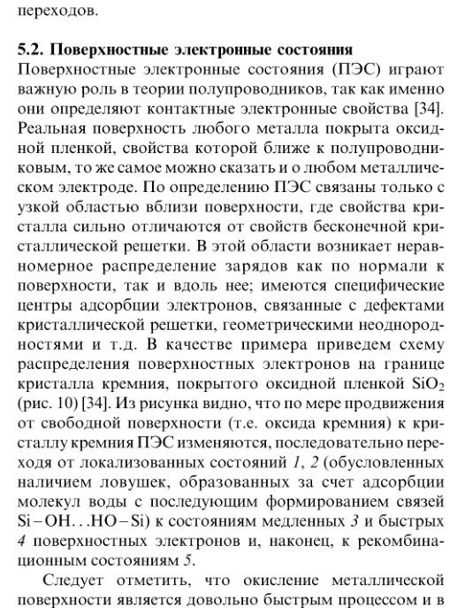
Тип ошибки: потеря символов/строк; reading order или разбиение слов; сломанные переносы; ошибки OCR/символьные замены
Причина: Длина output составляет 0.43 от GT; CER-quality=25.25, WER-quality=0.00. Классификация причины основана на фактическом соотношении длин и разрыве между посимвольной и пословной метриками.
Влияние: Object Score=15.78/100; потеря относительно идеального объекта=84.22 п.п.; cer=25.25, wer=0.00, edit_similarity=25.25
Ground Truth
5.2. Поверхностные электронные состояния Поверхностные электронные состояния (ПЭС) играют важную роль в теории полупроводников, так как именно они определяют контактные электронные свойства [34]. Реальная поверхность любого металла покрыта оксид ной пленкой, свойства которой ближе к полупроводни ковым, то же самое можно сказать и о л ю б о м металличе ском электроде. П о определению П Э С связаны только с узкой областью вблизи поверхности, где свойства кри сталла сильно отличаются от свойств бесконечной кри сталлической решетки. В этой области возникает нерав н о м е р н о е распределение з а р я д о в как по н о р м а л и к поверхности, так и вдоль нее; имеются специфические центры адсорбции электронов, связанные с дефектами кристаллической решетки, геометрическими неоднород- н о с т я м и и т.д. В качестве п р и м е р а приведем схему распределения поверхностных электронов на границе кристалла кремния, покрытого оксидной пленкой S i 0 2 (рис. 10) [34]. Из рисунка видно, что по мере продвижения от свободной поверхности (т.е. оксида кремния) к кри сталлу кремния П Э С изменяются, последовательно пере ходя от локализованных состояний 7, 2 (обусловленных наличием ловушек, образованных за счет адсорбции молекул воды с последующим формированием связей S i - О Н . . . Н О - S i ) к состояниям медленных 3 и быстрых 4 поверхностных электронов и, наконец, к рекомбина- ционным состояниям 5.
Output инструмента
т е с я я ( П С) в, т к к к и о е с а [34]. а а п е к п м м ы т е с е э е и п 5.2. П е ь в т т к ю р и о я п й п м, т м э й о а с ь л а к о с е э о м й б ь и о л С с ю П и, г в б и в в е; и и п я о т с и. В э й о е к и в и э ь н в, с й, с е м е с о ж е. П о о ю в о о й р е и, т ы а о с а к й к т н о к я е с к и е и д- а м у е й S i 02 о, ч е п о м о п я) к к я х и В к й р и, г и т . д. и н е в а я й п я, п а к с. 10) [34]. И з р и (т.е. о я, п й п С и я П о а в а к о п й 7, 2 ( о а х т м м О - S i) к с в и, н ц, к (р т с у к т л я о м л S i - О 4 п м с х с к, ы с п Н .. . Н х м 5. х и й м м х х 3 и б а-
MinerU
Пример 1: Diagrams — DIA_001 (D01, стр. 9), 0,00/100
Исходный объект
Тип ошибки: диаграмма сохранена как обычное изображение; потеря текста и связей
Причина: В GT-области найдено Image: 1, но Diagram отсутствует. Generic image не содержит типизированных text_elements/key_elements.
Влияние: Object Score=0.00/100; потеря относительно идеального объекта=100.00 п.п.; detection_recall=0.00, iou=0.00, diagram_text_recall=0.00, caption=0.00, element_recall=0.00, key_elements=0.00

Ground Truth
тип: electrical_scheme caption: Рис. 4.1. Схемы электрических цепей для реализации метода амперметра и вольтметра текст: Источник напряжения, Rрег, A, V, Rx ключевые элементы/связи: амперметр, вольтметр, измеряемое сопротивление asset: ground_truth/assets/DIA_001.png
Output инструмента
Типизированный объект отсутствует. Содержимое в той же области, но другого/несопоставленного типа: - Image overlap=0.70: caption: Рис. 4.1. Схемы электрических цепей для реализации метода амперметра и вольтметра; asset: assets\p9_image_0007.jpg
Пример 2: Chemistry — CHEM_001 (D02, стр. 3), 30,98/100
Исходный объект
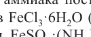
Тип ошибки: ошибки индексов; ошибки химических символов
Причина: GT='FeCl3·6H2O', output='FeCl3'; token F1=54.55, composition similarity=30.77.
Влияние: Object Score=30.98/100; потеря относительно идеального объекта=69.02 п.п.; detection=100.00, token_f1=54.55, composition_similarity=30.77, structured_extraction=30.98
Ground Truth
Формула: FeCl3·6H2O
Output инструмента
Формула: FeCl3
Пример 3: Tables — TAB_006 (D04, стр. 8), 35,92/100
Исходный объект
Тип ошибки: потеря строк; ошибки объединения ячеек; искажение содержимого ячеек
Причина: GT=25×6, output=8×6; headers 6→6. Cell recall=31.06, TEDS-like=26.79.
Влияние: Object Score=35.92/100; потеря относительно идеального объекта=64.08 п.п.; cell_recall=31.06, cell_content=27.04, row_structure=32.00, column_structure=100.00, merged_f1=0.00, teds_like=26.79
Ground Truth
Размер: 25 × 6; ячеек: 132 [H] Сеть | [H] Показатель | [H] Обучающее α | [H] Обучающее λ | [H] Обучающее + 5% шум α | [H] Обучающее + 5% шум λ 1 | Правильно | 68,20 % | 35,60 % | 67,60 % | 36,20 % | Средняя ошибка | 0,0787 | 0,1430 | 0,0827 | 0,1441 | Макс. ошибка | 0,3728 | 0,5027 | 0,9759 | 0,5047 | Дисперсия ошибки | 0,0030 | 0,0088 | 0,0046 | 0,0089 2 | Правильно | 86,00 % | | 82,40 % | | Средняя ошибка | 0,0604 | | 0,0641 | | Макс. ошибка | 0,3622 | | 0,4495 | | Дисперсия ошибки | 0,0020 | | 0,0028 | 3 | Правильно | 88,70 % | | 82,40 % | | Средняя ошибка | 0,0583 | | 0,0634 | | Макс. ошибка | 0,2045 | | 0,8540 | | Дисперсия ошибки | 0,0013 | | 0,0029 | 4 | Правильно | 77,10 % | 39,50 % | 75,80 % | 38,60 % | Средняя ошибка | 0,0671 | 0,1449 | 0,0712 | 0,1466 | Макс. ошибка | 0,3594 | 0,5603 | 0,7292 | 0,5605 | Дисперсия ошибки | 0,0025 | 0,0103 | 0,0036 | 0,0104 5 | Правильно | 88,50 % | | 84,20 % | | Средняя ошибка | 0,0574 | | 0,0651 | | Макс. ошибка | 0,3233 | | 1,4295 | | Дисперсия ошибки | 0,016 | | 0,0057 | 6 | Правильно | 80,60 % | | 79,00 % | | Средняя ошибка | 0,0631 | | 0,0683 | | Макс. ошибка | 0,2647 | | 0,8166 | | Дисперсия ошибки | 0,0018 | | 0,0037 |
Output инструмента
Размер: 8 × 6; ячеек: 48 [H] | [H] | [H] Обуч | [H] ающее | [H] Обучающ | [H] ее+5% шум Сеть | | α | λ | α | λ 1 | ПравильноСредняя ошибкаМакс. ошибкаДисперсия ошибки | 68,20 %0,07870,37280,0030 | 35,60 %0,14300,50270,0088 | 67,60 %0,08270,97590,0046 | 36,20 %0,14410,50470,0089 2 | ПравильноСредняя ошибкаМакс. ошибкаДисперсия ошибки | 86,00 %0,06040,36220,0020 | | 82,40 %0,06410,44950,0028 | 3 | ПравильноСредняя ошибкаМакс. ошибкаДисперсия ошибки | 88,70 %0,05830,20450,0013 | | 82,40 %0,06340,85400,0029 | 4 | ПравильноСредняя ошибкаМакс. ошибкаДисперсия ошибки | 77,10 %0,06710,35940,0025 | 39,50 %0,14490,56030,0103 | 75,80 %0,07120,72920,0036 | 38,60 %0,14660,56050,0104 5 | ПравильноСредняя ошибкаМакс. ошибкаДисперсия ошибки | 88,50 %0,05740,32330,016 | | 84,20 %0,06511,42950,0057 | 6 | ПравильноСредняя ошибкаМакс. ошибкаДисперсия ошибки | 80,60 %0,06310,26470,0018 | | 79,00 %0,06830,81660,0037 |
Пример 4: Math — MATH_001 (D01, стр. 17), 39,77/100
Исходный объект
Тип ошибки: искажение токенов/номера формулы
Причина: Exact match отсутствует; token precision=62.31, token recall=94.19, edit similarity=48.85.
Влияние: Object Score=39.77/100; потеря относительно идеального объекта=60.23 п.п.; raw_exact_match=0.00, normalized_exact_match=0.00, token_precision=62.31, token_recall=94.19, token_f1=75.00, edit_similarity=48.85
Ground Truth
\tilde{R}_{x}=\frac{U_{\mathrm{в}}}{I_{\mathrm{а}}}=\frac{U_R}{I_0+I_{\mathrm{в}}}=\frac{R_x}{1+\frac{R_x}{R_{\mathrm{в}}}}Output инструмента
\widetilde {\mathrm{R}} _ {\mathrm{x}} = \frac {\mathrm{U} _ {\mathrm{B}}}{\mathrm{I} _ {\mathrm{a}}} = \frac {\mathrm{U} _ {\mathrm{R}}}{\mathrm{I} _ {0} + \mathrm{I} _ {\mathrm{B}}} = \frac {\mathrm{R} _ {\mathrm{x}}}{1 + \frac {\mathrm{R} _ {\mathrm{x}}}{\mathrm{R} _ {\mathrm{B}}}},\tag{3}Пример 5: Images — IMG_005 (D05, стр. 2), 61,97/100
Исходный объект
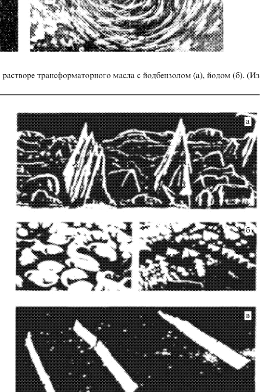
Тип ошибки: неправильный crop; потеря caption
Причина: Detection=100.00, IoU=27.89, extraction=100.00, caption=0.00.
Влияние: Object Score=61.97/100; потеря относительно идеального объекта=38.03 п.п.; detection_recall=100.00, iou=27.89, extraction=100.00, caption=0.00

Ground Truth
caption: Рис. 2. Фотографии поверхности медного электрода после воздействия электрического поля; asset: ground_truth/assets/IMG_005.png
Output инструмента
caption: нет; asset: assets\p2_image_0011.jpg
OCR.Space
Пример 1: Text — TXT_008 (D04, стр. 9), 0,00/100
Исходный объект
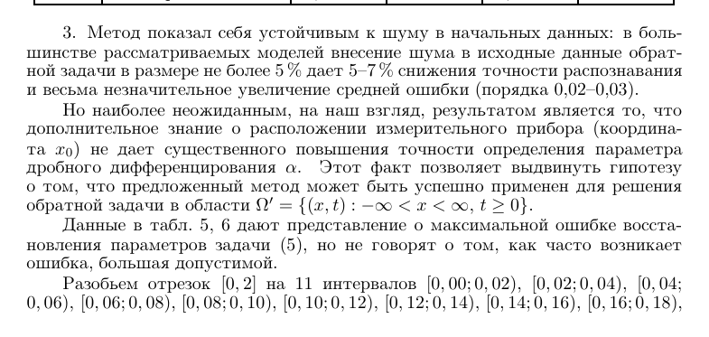
Тип ошибки: пропуск текста
Причина: В размеченной области не найден TextBlock, поэтому все текстовые компоненты равны нулю.
Влияние: Object Score=0.00/100; потеря относительно идеального объекта=100.00 п.п.; cer=0.00, wer=0.00, edit_similarity=0.00
Ground Truth
3. Метод показал себя устойчивым к шуму в начальных данных: в боль-
шинстве рассматриваемых моделей внесение шума в исходные данные обрат-
ной задачи в размере не более 5 % дает 5–7 % снижения точности распознавания
и весьма незначительное увеличение средней ошибки (порядка 0,02–0,03).
Но наиболее неожиданным, на наш взгляд, результатом является то, что
дополнительное знание о расположении измерительного прибора (координа-
та x0) не дает существенного повышения точности определения параметра
дробного дифференцирования α.
Этот факт позволяет выдвинуть гипотезу
о том, что предложенный метод может быть успешно применен для решения
обратной задачи в области Ω′ = {(x, t) : −∞< x < ∞, t ≥0}.
Данные в табл. 5, 6 дают представление о максимальной ошибке восста-
новления параметров задачи (5), но не говорят о том, как часто возникает
ошибка, большая допустимой.
Разобьем отрезок [0, 2] на 11 интервалов [0, 00; 0, 02), [0, 02; 0, 04), [0, 04;
0, 06), [0, 06; 0, 08), [0, 08; 0, 10), [0, 10; 0, 12), [0, 12; 0, 14), [0, 14; 0, 16), [0, 16; 0, 18),Output инструмента
Типизированный объект отсутствует.
Пример 2: Tables — TAB_006 (D04, стр. 8), 0,00/100
Исходный объект
Тип ошибки: пропуск таблицы
Причина: В области нет типизированной таблицы; строки, колонки и headers не восстановлены.
Влияние: Object Score=0.00/100; потеря относительно идеального объекта=100.00 п.п.; cell_recall=0.00, cell_content=24.24, row_structure=0.00, column_structure=0.00, merged_f1=0.00, teds_like=0.45
Ground Truth
Размер: 25 × 6; ячеек: 132 [H] Сеть | [H] Показатель | [H] Обучающее α | [H] Обучающее λ | [H] Обучающее + 5% шум α | [H] Обучающее + 5% шум λ 1 | Правильно | 68,20 % | 35,60 % | 67,60 % | 36,20 % | Средняя ошибка | 0,0787 | 0,1430 | 0,0827 | 0,1441 | Макс. ошибка | 0,3728 | 0,5027 | 0,9759 | 0,5047 | Дисперсия ошибки | 0,0030 | 0,0088 | 0,0046 | 0,0089 2 | Правильно | 86,00 % | | 82,40 % | | Средняя ошибка | 0,0604 | | 0,0641 | | Макс. ошибка | 0,3622 | | 0,4495 | | Дисперсия ошибки | 0,0020 | | 0,0028 | 3 | Правильно | 88,70 % | | 82,40 % | | Средняя ошибка | 0,0583 | | 0,0634 | | Макс. ошибка | 0,2045 | | 0,8540 | | Дисперсия ошибки | 0,0013 | | 0,0029 | 4 | Правильно | 77,10 % | 39,50 % | 75,80 % | 38,60 % | Средняя ошибка | 0,0671 | 0,1449 | 0,0712 | 0,1466 | Макс. ошибка | 0,3594 | 0,5603 | 0,7292 | 0,5605 | Дисперсия ошибки | 0,0025 | 0,0103 | 0,0036 | 0,0104 5 | Правильно | 88,50 % | | 84,20 % | | Средняя ошибка | 0,0574 | | 0,0651 | | Макс. ошибка | 0,3233 | | 1,4295 | | Дисперсия ошибки | 0,016 | | 0,0057 | 6 | Правильно | 80,60 % | | 79,00 % | | Средняя ошибка | 0,0631 | | 0,0683 | | Макс. ошибка | 0,2647 | | 0,8166 | | Дисперсия ошибки | 0,0018 | | 0,0037 |
Output инструмента
Типизированный объект отсутствует.
Пример 3: Images — IMG_001 (D01, стр. 8), 0,00/100
Исходный объект
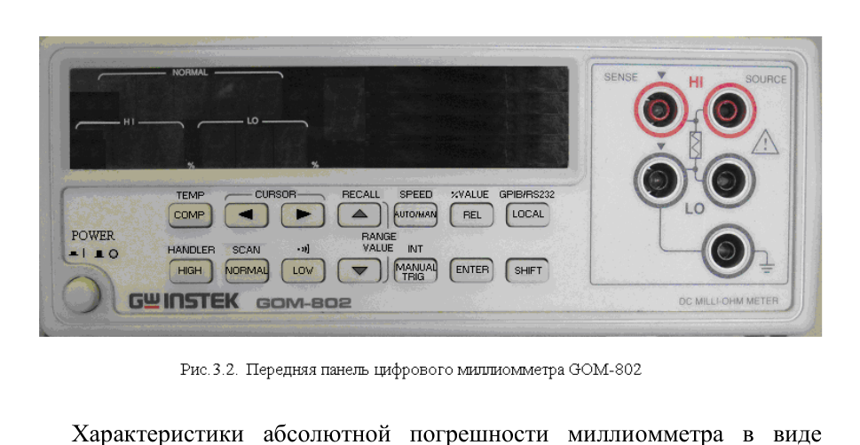
Тип ошибки: в области остался только текст; потеря visual payload
Причина: В области найдено TextBlock: 8, но отсутствует Image asset; OCR-текст, caption или alt-text не заменяют извлечение изображения.
Влияние: Object Score=0.00/100; потеря относительно идеального объекта=100.00 п.п.; detection_recall=0.00, iou=0.00, extraction=0.00, caption=0.00
Ground Truth
caption: Рис. 3.2. Лицевая панель цифрового миллиомметра GOM-802; asset: ground_truth/assets/IMG_001.png
Output инструмента
Типизированный объект отсутствует. Содержимое в той же области, но другого/несопоставленного типа: - TextBlock overlap=0.03: Рис. 3.2. Передняя панель цифрового миллиомметра GOM-802 - TextBlock overlap=0.00: GWINSTEK - TextBlock overlap=0.00: DC MILLI-OHM METER - TextBlock overlap=0.00: GOM-802 - TextBlock overlap=0.00: GPIB/RS232 - TextBlock overlap=0.00: HANDLER - TextBlock overlap=0.00: NORMAL - TextBlock overlap=0.00: CURSOR
Пример 4: Diagrams — DIA_001 (D01, стр. 9), 0,00/100
Исходный объект
Тип ошибки: диаграмма представлена только текстом/Markdown; связи не типизированы
Причина: В GT-области найдено TextBlock: 8, но Diagram отсутствует. OCR-текст или Markdown/Mermaid не дают benchmark typed key_elements без отдельного преобразования.
Влияние: Object Score=0.00/100; потеря относительно идеального объекта=100.00 п.п.; detection_recall=0.00, iou=0.00, diagram_text_recall=0.00, caption=0.00, element_recall=0.00, key_elements=0.00
Ground Truth
тип: electrical_scheme caption: Рис. 4.1. Схемы электрических цепей для реализации метода амперметра и вольтметра текст: Источник напряжения, Rрег, A, V, Rx ключевые элементы/связи: амперметр, вольтметр, измеряемое сопротивление asset: ground_truth/assets/DIA_001.png
Output инструмента
Типизированный объект отсутствует. Содержимое в той же области, но другого/несопоставленного типа: - TextBlock overlap=0.01: UBB Rx - TextBlock overlap=0.01: напряжения - TextBlock overlap=0.00: 6) - TextBlock overlap=0.00: Источник - TextBlock overlap=0.00: Источник - TextBlock overlap=0.00: a) - TextBlock overlap=0.00: Rper - TextBlock overlap=0.00: Rx
Пример 5: Math — MATH_002 (D04, стр. 1), 22,01/100
Исходный объект
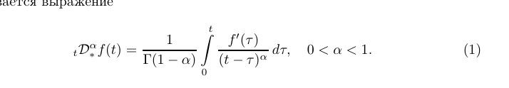
Тип ошибки: потеря fraction structure; ошибки subscript; ошибки superscript; потеря Greek symbols; потеря operators; потеря brackets
Причина: Exact match отсутствует; token precision=72.41, token recall=31.82, edit similarity=21.62.
Влияние: Object Score=22.01/100; потеря относительно идеального объекта=77.99 п.п.; raw_exact_match=0.00, normalized_exact_match=0.00, token_precision=72.41, token_recall=31.82, token_f1=44.21, edit_similarity=21.62
Ground Truth
{}_{t}D_*^{\alpha}f(t)=\frac{1}{\Gamma(1-\alpha)}\int_{0}^{t}\frac{f'(\tau)}{(t-\tau)^{\alpha}}\,d\tau,\quad 0<\alpha<1Output инструмента
1 f'(т) Dof(t) = (1-a) (1-7) dr. 0 < α <1.
Nutrient
Пример 1: Math — MATH_003 (D04, стр. 2), 0,00/100
Исходный объект
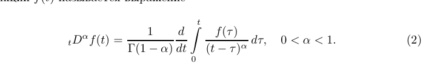
Тип ошибки: потеря fraction structure; ошибки subscript; ошибки superscript; потеря Greek symbols; потеря operators; потеря brackets
Причина: Exact match отсутствует; token precision=100.00, token recall=0.00, edit similarity=0.00.
Влияние: Object Score=0.00/100; потеря относительно идеального объекта=100.00 п.п.; raw_exact_match=0.00, normalized_exact_match=0.00, token_precision=100.00, token_recall=0.00, token_f1=0.00, edit_similarity=0.00
Ground Truth
{}_{t}D^{\alpha}f(t)=\frac{1}{\Gamma(1-\alpha)}\frac{d}{dt}\int_{0}^{t}\frac{f(\tau)}{(t-\tau)^{\alpha}}\,d\tau,\quad 0<\alpha<1Output инструмента
Formula spatially matched, но математический payload пуст.
Пример 2: Diagrams — DIA_001 (D01, стр. 9), 0,00/100
Исходный объект
Тип ошибки: диаграмма сохранена как обычное изображение; потеря текста и связей
Причина: В GT-области найдено Image: 1, но Diagram отсутствует. Generic image не содержит типизированных text_elements/key_elements.
Влияние: Object Score=0.00/100; потеря относительно идеального объекта=100.00 п.п.; detection_recall=0.00, iou=0.00, diagram_text_recall=0.00, caption=0.00, element_recall=0.00, key_elements=0.00
Ground Truth
тип: electrical_scheme caption: Рис. 4.1. Схемы электрических цепей для реализации метода амперметра и вольтметра текст: Источник напряжения, Rрег, A, V, Rx ключевые элементы/связи: амперметр, вольтметр, измеряемое сопротивление asset: ground_truth/assets/DIA_001.png
Output инструмента
Типизированный объект отсутствует. Содержимое в той же области, но другого/несопоставленного типа: - Image overlap=0.68: caption: нет; asset: нет
Пример 3: Tables — TAB_006 (D04, стр. 8), 34,73/100
Исходный объект
Тип ошибки: потеря строк; ошибки объединения ячеек; искажение содержимого ячеек
Причина: GT=25×6, output=8×6; headers 6→10. Cell recall=29.55, TEDS-like=23.66.
Влияние: Object Score=34.73/100; потеря относительно идеального объекта=65.27 п.п.; cell_recall=29.55, cell_content=27.49, row_structure=32.00, column_structure=100.00, merged_f1=0.00, teds_like=23.66
Ground Truth
Размер: 25 × 6; ячеек: 132 [H] Сеть | [H] Показатель | [H] Обучающее α | [H] Обучающее λ | [H] Обучающее + 5% шум α | [H] Обучающее + 5% шум λ 1 | Правильно | 68,20 % | 35,60 % | 67,60 % | 36,20 % | Средняя ошибка | 0,0787 | 0,1430 | 0,0827 | 0,1441 | Макс. ошибка | 0,3728 | 0,5027 | 0,9759 | 0,5047 | Дисперсия ошибки | 0,0030 | 0,0088 | 0,0046 | 0,0089 2 | Правильно | 86,00 % | | 82,40 % | | Средняя ошибка | 0,0604 | | 0,0641 | | Макс. ошибка | 0,3622 | | 0,4495 | | Дисперсия ошибки | 0,0020 | | 0,0028 | 3 | Правильно | 88,70 % | | 82,40 % | | Средняя ошибка | 0,0583 | | 0,0634 | | Макс. ошибка | 0,2045 | | 0,8540 | | Дисперсия ошибки | 0,0013 | | 0,0029 | 4 | Правильно | 77,10 % | 39,50 % | 75,80 % | 38,60 % | Средняя ошибка | 0,0671 | 0,1449 | 0,0712 | 0,1466 | Макс. ошибка | 0,3594 | 0,5603 | 0,7292 | 0,5605 | Дисперсия ошибки | 0,0025 | 0,0103 | 0,0036 | 0,0104 5 | Правильно | 88,50 % | | 84,20 % | | Средняя ошибка | 0,0574 | | 0,0651 | | Макс. ошибка | 0,3233 | | 1,4295 | | Дисперсия ошибки | 0,016 | | 0,0057 | 6 | Правильно | 80,60 % | | 79,00 % | | Средняя ошибка | 0,0631 | | 0,0683 | | Макс. ошибка | 0,2647 | | 0,8166 | | Дисперсия ошибки | 0,0018 | | 0,0037 |
Output инструмента
Размер: 8 × 6; ячеек: 46 [H] Сеть | [H] | [H] Обучающее | | [H] Обучающее+5%шум | [H] | [H] | [H] α | [H] λ | [H] α | [H] λ 1 | Правильно Средняя ошибка Макс. ошибка Дисперсия ошибки | 68,20 % 0,0787 0,3728 0,0030 | 35,60 % 0,1430 0,5027 0,0088 | 67,60 % 0,0827 0,9759 0,0046 | 36,20 % 0,1441 0,5047 0,0089 2 | Правильно Средняя ошибка Макс. ошибка Дисперсия ошибки | 86,00 % 0,0604 0,3622 0,0020 | | 82,40 % 0,0641 0,4495 0,0028 | 3 | Правильно Средняя ошибка Макс. ошибка Дисперсия ошибки | 88,70 % 0,0583 0,2045 0,0013 | | 82,40 % 0,0634 0,8540 0,0029 | 4 | Правильно Средняя ошибка Макс. ошибка Дисперсия ошибки | 77,10 % 0,0671 0,3594 0,0025 | 39,50 % 0,1449 0,5603 0,0103 | 75,80 % 0,0712 0,7292 0,0036 | 38,60 % 0,1466 0,5605 0,0104 5 | Правильно Средняя ошибка Макс. ошибка Дисперсия ошибки | 88,50 % 0,0574 0,3233 0,016 | | 84,20 % 0,0651 1,4295 0,0057 | 6 | Правильно Средняя ошибка Макс. ошибка Дисперсия ошибки | 80,60 % 0,0631 0,2647 0,0018 | | 79,00 % 0,0683 0,8166 0,0037 |
Пример 4: Images — IMG_005 (D05, стр. 2), 36,90/100
Исходный объект
Тип ошибки: неправильный crop; изображение не сохранено; потеря caption
Причина: Detection=100.00, IoU=27.60, extraction=0.00, caption=0.00.
Влияние: Object Score=36.90/100; потеря относительно идеального объекта=63.10 п.п.; detection_recall=100.00, iou=27.60, extraction=0.00, caption=0.00
Ground Truth
caption: Рис. 2. Фотографии поверхности медного электрода после воздействия электрического поля; asset: ground_truth/assets/IMG_005.png
Output инструмента
caption: нет; asset: нет
Пример 5: Chemistry — CHEM_004 (D02, стр. 2), 38,30/100
Исходный объект
Тип ошибки: потеря химических символов/меток; structural formula не извлечена; неточный crop
Причина: Structure detection есть, но IoU=33.18, label recall=0.00, extraction=0.00.
Влияние: Object Score=38.30/100; потеря относительно идеального объекта=61.70 п.п.; detection=100.00, iou=33.18, label_recall=0.00, extraction=0.00, structured_extraction=11.85
Ground Truth
Тартразин (Tartrazine); текстовые метки: NaOOC, N=N, OH, NaO3S, SO3Na; asset: ground_truth/assets/CHEM_004.png
Output инструмента
structure; текстовые метки: нет; asset: нет
Mindee
Пример 1: Tables — TAB_001 (D01, стр. 4), 0,00/100
Исходный объект
Тип ошибки: таблица превращена в обычный текст; структура строк/колонок отсутствует
Причина: Typed Table отсутствует, но внутри GT-области найдено TextBlock: 8. Текст извлечён без сетки ячеек, поэтому cell recall и структурные компоненты обнуляются.
Влияние: Object Score=0.00/100; потеря относительно идеального объекта=100.00 п.п.; cell_recall=0.00, cell_content=0.00, row_structure=0.00, column_structure=0.00, merged_f1=100.00, teds_like=1.96
Ground Truth
Размер: 5 × 6; ячеек: 30 [H] Тип | [H] Число декад | [H] Пределы воспроизведения R, Ом | [H] Дискретность воспроизведения, Ом | [H] Класс точности γ, % | [H] Допускаемая мощность на декаду, Вт Р 33 | 6 | 0–100000 | 0,1 | 0,2 | 0,5 КМС 6 | 6 | 0–100000 | 0,1 | 0,2 | 0,5 МСР 60М | 6 | 0–10000 | 0,01 | 0,02 | 0,5 МСР 63 | 7 | 0–100000 | 0,01 | 0,05 | 0,5
Output инструмента
Типизированный объект отсутствует. Содержимое в той же области, но другого/несопоставленного типа: - TextBlock overlap=0.01: Допускаема - TextBlock overlap=0.01: Дискрет- - TextBlock overlap=0.01: произведе- - TextBlock overlap=0.01: Пределы - TextBlock overlap=0.01: воспроиз- - TextBlock overlap=0.01: мощность - TextBlock overlap=0.01: ведения - TextBlock overlap=0.01: Класс
Пример 2: Images — IMG_001 (D01, стр. 8), 0,00/100
Исходный объект
Тип ошибки: в области остался только текст; потеря visual payload
Причина: В области найдено TextBlock: 8, но отсутствует Image asset; OCR-текст, caption или alt-text не заменяют извлечение изображения.
Влияние: Object Score=0.00/100; потеря относительно идеального объекта=100.00 п.п.; detection_recall=0.00, iou=0.00, extraction=0.00, caption=0.00
Ground Truth
caption: Рис. 3.2. Лицевая панель цифрового миллиомметра GOM-802; asset: ground_truth/assets/IMG_001.png
Output инструмента
Типизированный объект отсутствует. Содержимое в той же области, но другого/несопоставленного типа: - TextBlock overlap=0.01: GWINSTEK - TextBlock overlap=0.01: GOM-802 - TextBlock overlap=0.01: миллиомметра - TextBlock overlap=0.01: цифрового - TextBlock overlap=0.00: GOM-802 - TextBlock overlap=0.00: Передняя - TextBlock overlap=0.00: панель - TextBlock overlap=0.00: -|10
Пример 3: Diagrams — DIA_001 (D01, стр. 9), 0,00/100
Исходный объект
Тип ошибки: диаграмма представлена только текстом/Markdown; связи не типизированы
Причина: В GT-области найдено TextBlock: 8, но Diagram отсутствует. OCR-текст или Markdown/Mermaid не дают benchmark typed key_elements без отдельного преобразования.
Влияние: Object Score=0.00/100; потеря относительно идеального объекта=100.00 п.п.; detection_recall=0.00, iou=0.00, diagram_text_recall=0.00, caption=0.00, element_recall=0.00, key_elements=0.00
Ground Truth
тип: electrical_scheme caption: Рис. 4.1. Схемы электрических цепей для реализации метода амперметра и вольтметра текст: Источник напряжения, Rрег, A, V, Rx ключевые элементы/связи: амперметр, вольтметр, измеряемое сопротивление asset: ground_truth/assets/DIA_001.png
Output инструмента
Типизированный объект отсутствует. Содержимое в той же области, но другого/несопоставленного типа: - TextBlock overlap=0.01: напряжения - TextBlock overlap=0.01: Источник - TextBlock overlap=0.01: напряжения - TextBlock overlap=0.01: Источник - TextBlock overlap=0.01: Rper - TextBlock overlap=0.00: Rper - TextBlock overlap=0.00: б) - TextBlock overlap=0.00: (B
Пример 4: Math — MATH_001 (D01, стр. 17), 9,23/100
Исходный объект
Тип ошибки: потеря fraction structure; ошибки subscript; потеря brackets
Причина: Exact match отсутствует; token precision=50.00, token recall=11.63, edit similarity=8.40.
Влияние: Object Score=9.23/100; потеря относительно идеального объекта=90.77 п.п.; raw_exact_match=0.00, normalized_exact_match=0.00, token_precision=50.00, token_recall=11.63, token_f1=18.87, edit_similarity=8.40
Ground Truth
\tilde{R}_{x}=\frac{U_{\mathrm{в}}}{I_{\mathrm{а}}}=\frac{U_R}{I_0+I_{\mathrm{в}}}=\frac{R_x}{1+\frac{R_x}{R_{\mathrm{в}}}}Output инструмента
U R. UR UB = Ř = = , R, I2 I0+1B x a 1+ RA
Пример 5: Chemistry — CHEM_001 (D02, стр. 3), 41,50/100
Исходный объект
Тип ошибки: ошибки индексов; ошибки химических символов
Причина: GT='FeCl3·6H2O', output='6H2O'; token F1=66.67, composition similarity=90.00.
Влияние: Object Score=41.50/100; потеря относительно идеального объекта=58.50 п.п.; detection=100.00, token_f1=66.67, composition_similarity=90.00, structured_extraction=41.50
Ground Truth
Формула: FeCl3·6H2O
Output инструмента
Формула: 6H2O
Adobe Extract
Пример 1: Tables — TAB_007 (D05, стр. 21), 0,00/100
Исходный объект
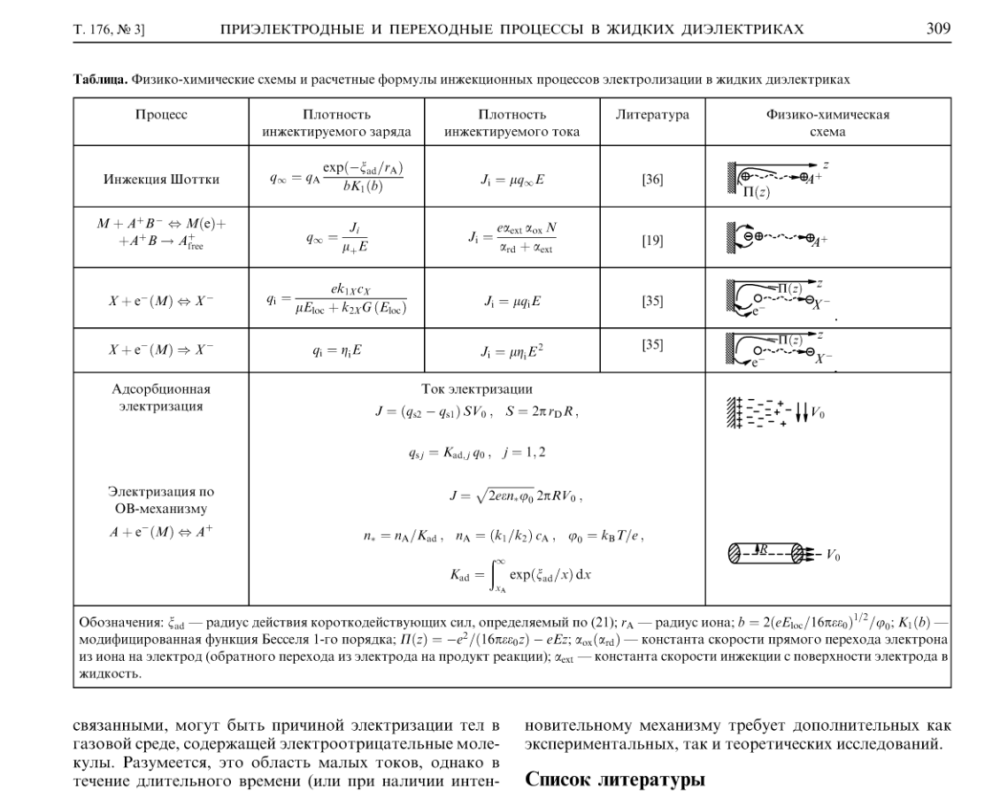
Тип ошибки: таблица превращена в обычный текст; структура строк/колонок отсутствует
Причина: Typed Table отсутствует, но внутри GT-области найдено TextBlock: 2. Текст извлечён без сетки ячеек, поэтому cell recall и структурные компоненты обнуляются.
Влияние: Object Score=0.00/100; потеря относительно идеального объекта=100.00 п.п.; cell_recall=0.00, cell_content=5.71, row_structure=0.00, column_structure=0.00, merged_f1=100.00, teds_like=1.65

Ground Truth
Размер: 7 × 5; ячеек: 35 [H] Процесс | [H] Плотность инжектируемого заряда | [H] Плотность инжектируемого тока | [H] Литература | [H] Физико-химическая схема Инжекция Шоттки | q∞ = qA exp(-ε_ad/r_A) | j_i = β q∞ E | [36] | инжекция с поверхности электрода M + A+B− ⇄ M(e) + A + B | q∞ | j_i = j_e a_ext a_ox N / (a_red + a_ext) | [19] | окислительно-восстановительный механизм X+Q−(M) ⇄ X− | q∞ | j_i = μ q∞ E | [35] | полевая инжекция X+Q−(M) ⇒ X− | q∞ | j_i = μ r_i E² | [35] | полевая инжекция Адсорбционная электризация | Ток электризации | J = -q_i S V_0; S = 2π r D R | | q_sj = K_ad j q_0, j=1,2 Электризация по ОВ-механизму | n* = n_A/K_AD; n_A=(k_1/k_2)c_A | I = √(2 ε e n* φ_0) 2πR V_0 | | K_ad = ∫ exp(E_ad/x) dx
Output инструмента
Типизированный объект отсутствует. Содержимое в той же области, но другого/несопоставленного типа: - Image overlap=1.00: caption: нет; asset: C:\Users\Nocomp\Desktop\nlp\outputs\benchmark\cache\adobe_extract\D05\versions\88da6cd9c6adb25eb367c265\assets\adobe_p21_00613.png - Image overlap=1.00: caption: нет; asset: нет - Image overlap=1.00: caption: нет; asset: C:\Users\Nocomp\Desktop\nlp\outputs\benchmark\cache\adobe_extract\D05\versions\88da6cd9c6adb25eb367c265\assets\adobe_p21_00616.png - Image overlap=1.00: caption: нет; asset: нет - Image overlap=1.00: caption: нет; asset: C:\Users\Nocomp\Desktop\nlp\outputs\benchmark\cache\adobe_extract\D05\versions\88da6cd9c6adb25eb367c265\assets\adobe_p21_00636.png - Image overlap=1.00: caption: нет; asset: нет - TextBlock overlap=0.02: связанными, могут быть причиной электризации тел в газовой среде, содержащей электроотрицательные молекулы. Разумеется, это область малых токов, однако в течение длительного времени (или при наличии интенсивного обтекания тел) накопление зарядов может быть значительным, и эти процессы нельзя не принимать во внимание. По нашему мнению, процесс ионизации плотных газов, скажем воздуха, по окислительно-восста- - TextBlock overlap=0.02: новительному механизму требует дополнительных как экспериментальных, так и теоретических исследований.
Пример 2: Math — MATH_001 (D01, стр. 17), 0,00/100
Исходный объект
Тип ошибки: формула возвращена как Figure/Image; нет структурированного Math payload
Причина: В области есть графический объект, но нет Formula с LaTeX/plain-math представлением; типобезопасный matcher не переименовывает generic Figure в формулу.
Влияние: Object Score=0.00/100; потеря относительно идеального объекта=100.00 п.п.; raw_exact_match=0.00, normalized_exact_match=0.00, token_precision=100.00, token_recall=0.00, token_f1=0.00, edit_similarity=0.00

Ground Truth
\tilde{R}_{x}=\frac{U_{\mathrm{в}}}{I_{\mathrm{а}}}=\frac{U_R}{I_0+I_{\mathrm{в}}}=\frac{R_x}{1+\frac{R_x}{R_{\mathrm{в}}}}Output инструмента
Типизированный объект отсутствует. Содержимое в той же области, но другого/несопоставленного типа: - Image overlap=0.52: caption: нет; asset: C:\Users\Nocomp\Desktop\nlp\outputs\benchmark\cache\adobe_extract\D01\versions\92df332f0870ad8424f1dd75\assets\adobe_p17_00663.png - Image overlap=0.52: caption: нет; asset: нет - TextBlock overlap=0.02: (3)
Пример 3: Images — IMG_004 (D05, стр. 2), 0,00/100
Исходный объект
Тип ошибки: visual candidate не сопоставлен с Image GT
Причина: В области есть visual candidate, но он не выбран при one-to-one сопоставлении по типу/геометрии либо не имеет подтверждённого extraction payload.
Влияние: Object Score=0.00/100; потеря относительно идеального объекта=100.00 п.п.; detection_recall=0.00, iou=0.00, extraction=0.00, caption=0.00

Ground Truth
caption: Рис. 1. Картины течения в системе двух параллельных проводников; asset: ground_truth/assets/IMG_004.png
Output инструмента
Типизированный объект отсутствует. Содержимое в той же области, но другого/несопоставленного типа: - Image overlap=1.00: caption: нет; asset: C:\Users\Nocomp\Desktop\nlp\outputs\benchmark\cache\adobe_extract\D05\versions\88da6cd9c6adb25eb367c265\assets\adobe_p2_00043.png - Image overlap=1.00: caption: нет; asset: нет - Image overlap=1.00: caption: нет; asset: C:\Users\Nocomp\Desktop\nlp\outputs\benchmark\cache\adobe_extract\D05\versions\88da6cd9c6adb25eb367c265\assets\adobe_p2_00047.png - Image overlap=1.00: caption: нет; asset: нет - Image overlap=1.00: caption: нет; asset: C:\Users\Nocomp\Desktop\nlp\outputs\benchmark\cache\adobe_extract\D05\versions\88da6cd9c6adb25eb367c265\assets\adobe_p2_00050.png - Image overlap=1.00: caption: нет; asset: нет - Image overlap=1.00: caption: нет; asset: C:\Users\Nocomp\Desktop\nlp\outputs\benchmark\cache\adobe_extract\D05\versions\88da6cd9c6adb25eb367c265\assets\adobe_p2_00056.png - Image overlap=1.00: caption: нет; asset: нет
Пример 4: Diagrams — DIA_001 (D01, стр. 9), 0,00/100
Исходный объект
Тип ошибки: диаграмма сохранена как обычное изображение; потеря текста и связей
Причина: В GT-области найдено Image: 1, но Diagram отсутствует. Generic image не содержит типизированных text_elements/key_elements.
Влияние: Object Score=0.00/100; потеря относительно идеального объекта=100.00 п.п.; detection_recall=0.00, iou=0.00, diagram_text_recall=0.00, caption=0.00, element_recall=0.00, key_elements=0.00

Ground Truth
тип: electrical_scheme caption: Рис. 4.1. Схемы электрических цепей для реализации метода амперметра и вольтметра текст: Источник напряжения, Rрег, A, V, Rx ключевые элементы/связи: амперметр, вольтметр, измеряемое сопротивление asset: ground_truth/assets/DIA_001.png
Output инструмента
Типизированный объект отсутствует. Содержимое в той же области, но другого/несопоставленного типа: - Image overlap=1.00: caption: нет; asset: C:\Users\Nocomp\Desktop\nlp\outputs\benchmark\cache\adobe_extract\D01\versions\92df332f0870ad8424f1dd75\assets\adobe_p9_00278.png
Пример 5: Chemistry — CHEM_004 (D02, стр. 2), 37,78/100
Исходный объект
Тип ошибки: потеря химических символов/меток; structural formula не извлечена; неточный crop
Причина: Structure detection есть, но IoU=31.12, label recall=0.00, extraction=0.00.
Влияние: Object Score=37.78/100; потеря относительно идеального объекта=62.22 п.п.; detection=100.00, iou=31.12, label_recall=0.00, extraction=0.00, structured_extraction=11.11
Ground Truth
Тартразин (Tartrazine); текстовые метки: NaOOC, N=N, OH, NaO3S, SO3Na; asset: ground_truth/assets/CHEM_004.png
Output инструмента
structure; текстовые метки: нет; asset: нет
LlamaParse
Пример 1: Images — IMG_001 (D01, стр. 8), 0,00/100
Исходный объект
Тип ошибки: в области остался только текст; потеря visual payload
Причина: В области найдено TextBlock: 2, но отсутствует Image asset; OCR-текст, caption или alt-text не заменяют извлечение изображения.
Влияние: Object Score=0.00/100; потеря относительно идеального объекта=100.00 п.п.; detection_recall=0.00, iou=0.00, extraction=0.00, caption=0.00
Ground Truth
caption: Рис. 3.2. Лицевая панель цифрового миллиомметра GOM-802; asset: ground_truth/assets/IMG_001.png
Output инструмента
Типизированный объект отсутствует. Содержимое в той же области, но другого/несопоставленного типа: - TextBlock overlap=0.58: photograph: GWINSTEK GOM-802 DC MILLI-OHM METER front panel - TextBlock overlap=0.03: Рис.3.2. Передняя панель цифрового миллиомметра GОМ-802
Пример 2: Diagrams — DIA_001 (D01, стр. 9), 0,00/100
Исходный объект
Тип ошибки: диаграмма представлена только текстом/Markdown; связи не типизированы
Причина: В GT-области найдено TextBlock: 1, но Diagram отсутствует. OCR-текст или Markdown/Mermaid не дают benchmark typed key_elements без отдельного преобразования.
Влияние: Object Score=0.00/100; потеря относительно идеального объекта=100.00 п.п.; detection_recall=0.00, iou=0.00, diagram_text_recall=0.00, caption=0.00, element_recall=0.00, key_elements=0.00
Ground Truth
тип: electrical_scheme caption: Рис. 4.1. Схемы электрических цепей для реализации метода амперметра и вольтметра текст: Источник напряжения, Rрег, A, V, Rx ключевые элементы/связи: амперметр, вольтметр, измеряемое сопротивление asset: ground_truth/assets/DIA_001.png
Output инструмента
Типизированный объект отсутствует.
Содержимое в той же области, но другого/несопоставленного типа:
- TextBlock overlap=0.69: graph TD
subgraph a
S1["Источникнапряжения"] --- R1["R<sub>per</sub>"]
R1 --- A1(("A"))
A1 ---|I<sub>a</sub>| RX1["R<sub>x</sub>"]
S1 --- V1(("B"))
V1 ---|U<sub>B</sub>| RX1
A1 --- V1
end
subgraph b
S2["Источникнапряжения"] --- R2["R<sub>per</sub>"]
R2 --- A2(("A"))
A2 ---|I<sub>a</sub>| RX2["R<sub>x</sub>"]
S2 --- V2(("B"))
V2 ---|U<sub>B</sub>| RX2
R2 --- V2
endПример 3: Math — MATH_001 (D01, стр. 17), 37,44/100
Исходный объект
Тип ошибки: искажение токенов/номера формулы
Причина: Exact match отсутствует; token precision=58.65, token recall=90.70, edit similarity=44.74.
Влияние: Object Score=37.44/100; потеря относительно идеального объекта=62.56 п.п.; raw_exact_match=0.00, normalized_exact_match=0.00, token_precision=58.65, token_recall=90.70, token_f1=71.23, edit_similarity=44.74
Ground Truth
\tilde{R}_{x}=\frac{U_{\mathrm{в}}}{I_{\mathrm{а}}}=\frac{U_R}{I_0+I_{\mathrm{в}}}=\frac{R_x}{1+\frac{R_x}{R_{\mathrm{в}}}}Output инструмента
\tilde{\mathbf{R}}_{\mathbf{x}} = \frac{\mathbf{U}_{\mathbf{B}}}{\mathbf{I}_{\mathbf{a}}} = \frac{\mathbf{U}_{\mathbf{R}}}{\mathbf{I}_{\mathbf{0}} + \mathbf{I}_{\mathbf{B}}} = \frac{\mathbf{R}_{\mathbf{x}}}{1 + \frac{\mathbf{R}_{\mathbf{x}}}{\mathbf{R}_{\mathbf{B}}}}, \eqno(3)Пример 4: Chemistry — CHEM_004 (D02, стр. 2), 37,64/100
Исходный объект
Тип ошибки: потеря химических символов/меток; structural formula не извлечена; неточный crop
Причина: Structure detection есть, но IoU=30.56, label recall=0.00, extraction=0.00.
Влияние: Object Score=37.64/100; потеря относительно идеального объекта=62.36 п.п.; detection=100.00, iou=30.56, label_recall=0.00, extraction=0.00, structured_extraction=10.91
Ground Truth
Тартразин (Tartrazine); текстовые метки: NaOOC, N=N, OH, NaO3S, SO3Na; asset: ground_truth/assets/CHEM_004.png
Output инструмента
structure; текстовые метки: Тартразин; asset: нет
Пример 5: Tables — TAB_005 (D03, стр. 6), 51,74/100
Исходный объект
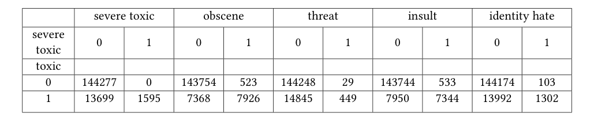
Тип ошибки: потеря строк; искажение содержимого ячеек
Причина: GT=5×11, output=3×12; headers 11→12. Cell recall=60.00, TEDS-like=50.85.
Влияние: Object Score=51.74/100; потеря относительно идеального объекта=48.26 п.п.; cell_recall=60.00, cell_content=1.98, row_structure=60.00, column_structure=91.67, merged_f1=100.00, teds_like=50.85
Ground Truth
Размер: 5 × 11; ячеек: 55 [H] | [H] severe toxic | [H] | [H] obscene | [H] | [H] threat | [H] | [H] insult | [H] | [H] identity hate | [H] severe toxic | 0 | 1 | 0 | 1 | 0 | 1 | 0 | 1 | 0 | 1 toxic | | | | | | | | | | 0 | 144277 | 0 | 143754 | 523 | 144248 | 29 | 143744 | 533 | 144174 | 103 1 | 13699 | 1595 | 7368 | 7926 | 14845 | 449 | 7950 | 7344 | 13992 | 1302
Output инструмента
Размер: 3 × 12; ячеек: 36 [H] severe toxic | [H] toxic | [H] severe toxic<br/>0<br/>toxic | [H] severe toxic<br/>1<br/>toxic | [H] obscene<br/>0<br/>toxic | [H] obscene<br/>1<br/>toxic | [H] threat<br/>0<br/>toxic | [H] threat<br/>1<br/>toxic | [H] insult<br/>0<br/>toxic | [H] insult<br/>1<br/>toxic | [H] identity hate<br/>0<br/>toxic | [H] identity hate<br/>1<br/>toxic 0 | 144277 | 0 | 143754 | 523 | 144248 | 29 | 143744 | 533 | 144174 | 103 | 1 | 13699 | 1595 | 7368 | 7926 | 14845 | 449 | 7950 | 7344 | 13992 | 1302 |
18. Обобщение результатов
| Задача | Предпочтительный профиль | Ограничение |
|---|---|---|
| Максимально точный обычный текст | PyMuPDF; затем Nutrient, Mindee, LlamaParse | PyMuPDF не восстанавливает сложную семантику таблиц/диаграмм автоматически. |
| Таблицы | MinerU, LlamaParse, Nutrient | Результаты близки и имеют широкую междокументную неопределённость. |
| Математические формулы | LlamaParse, MinerU, OCR.Space | Даже лидер имеет Math 49,33; обязательна проверка LaTeX. |
| Химия | Все обнаруживают 6/6; payload лучше сравнивать по Extraction | Химия проверена только на одном PDF. |
| Изображения | MinerU; далее Adobe Extract/PyMuPDF/pdfminer.six | Подписи, crop и типизация часто неполны. |
| Диаграммы | Docling; затем MinerU | Среднее категории 5,63; полноценное восстановление связей остаётся нерешённым. |
| Минимальная локальная задержка | pdfplumber или PyMuPDF | Структурные категории слабее локальных ML-систем. |
| Локальный комплексный профиль | Docling или MinerU | Docling ресурсоёмок; MinerU слабее по диаграммам. |
Ни один инструмент не доминирует во всех категориях. Лучший выбор определяется долей обычного текста, таблиц, формул и визуальных объектов, требованиями к локальности, задержке и ресурсам. Для промышленной системы разумна маршрутизация: быстрый локальный парсер для born-digital текста и более тяжёлый структурный/OCR pipeline для сложных страниц.
19. Ограничения исследования
- Корпус мал: пять целенаправленно выбранных PDF и 40 репрезентативных, а не исчерпывающе размеченных объектов.
- Химия представлена одним документом, изображения двумя, математика тремя; переносимость соответствующих результатов ограничена.
- Сравниваются конкретные версии, адаптеры и режимы; иной endpoint, OCR engine или модель может дать другой профиль.
- Object Score измеряет совпадение с выбранным представлением GT; для математики не проверяется символическая эквивалентность, для диаграмм — полная графовая эквивалентность.
- Reading order размечен косвенно внутри выбранных регионов; отдельного полного порядка всех блоков страницы нет.
- Облачное время включает клиентскую и сетевую часть конкретных запусков, но не раскрывает серверные ресурсы; локальное и облачное время различаются по природе.
- Стоимость зафиксирована как нулевая в условиях запусков и не является коммерческим сравнением тарифов.
- 13 статистических предупреждений сохранены как наблюдения; outliers автоматически не удалялись.
20. Выводы
- Предложенная система даёт отдельные воспроизводимые оценки текста, таблиц, математики, химии, изображений и диаграмм, а затем равновесный Overall.
- PyMuPDF наиболее точен по обычному тексту (99,98), MinerU — по таблицам (71,44) и изображениям (75,01), LlamaParse — по математике (49,33), pdfminer.six — по действующему Chemistry Score (82,59), Docling — по диаграммам (42,19).
- Наибольший Overall у Docling (59,44), но он не является лучшим по всем категориям и требует наибольших ресурсов и времени.
- Локальные ML-системы превосходят классические локальные парсеры в среднем Overall за счёт структурных и визуальных категорий; по тексту средние групп почти совпадают.
- Наиболее сложны диаграммы и математика. Таблицы и изображения также требуют структурного, а не только текстового извлечения.
- Результаты существенно зависят от PDF: D05 сложнее D03 на общем наборе Text/Table/Diagram, а отдельные инструменты резко меняют качество и время между документами.
- Повышение score оправдано только при исправлении ошибок адаптера, matching, нормализации или GT. Подгонка правил под конкретный GT снизила бы исследовательскую достоверность.
- Для внешнего сервера следует предоставлять профиль по категориям, время, ресурсы и примеры ошибок, а не один рейтинг Overall.
Промпт 12 — контроль baseline · Промпт 13 — статистический анализ · Промпт 14 — error analysis